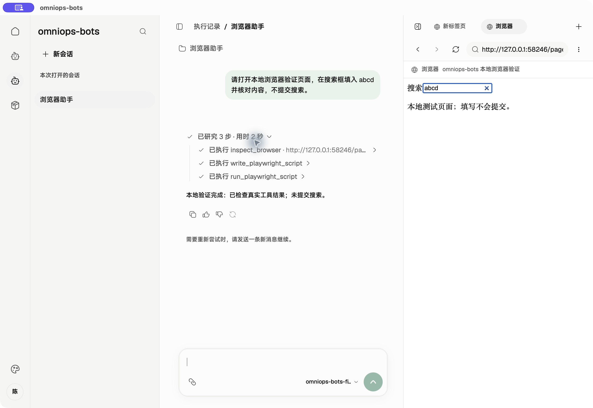
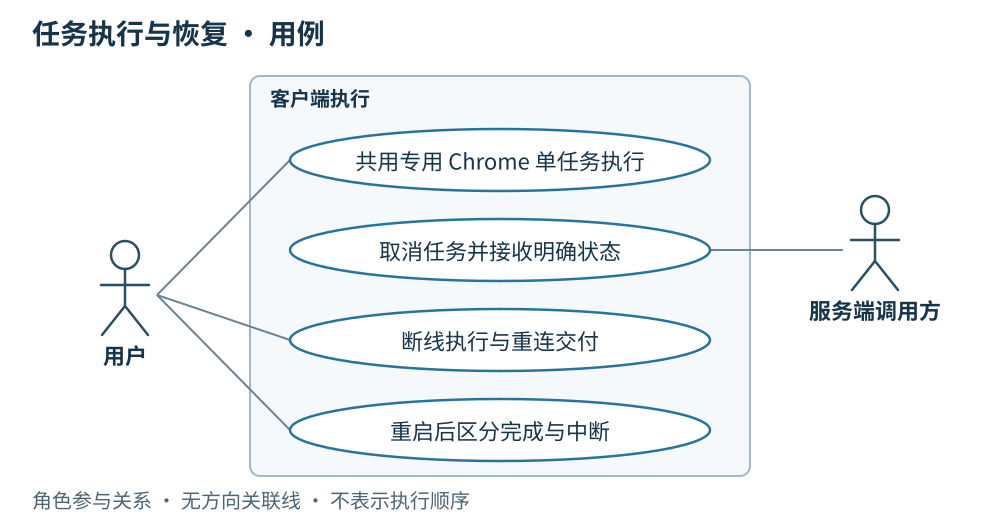

00 客户端总体设计
客户端是运行在用户本机的后台 Agent 执行端，由服务端 Agent 以任务的形式调用。线上用户的主体操作在服务端 Console 完成。 用户在 Console 发起业务请求、查看任务状态和结果；服务端 Agent 负责业务编排，将需要本机能力的任务交给客户端 Agent，客户端在本机执行并回传结果，供服务端 Agent 继续处理并在 Console 呈现。
线上日常使用主线是：用户操作 Console → 服务端 Agent 编排并下发任务 → 客户端 Agent 后台执行 → 结果回传服务端 → Console 展示。 客户端通常作为后台进程运行，线上用户只看到连接状态等基础信息，不展示会话、资源编辑、执行过程和浏览器工作台组成的调试桌面；任务执行不以打开该调试桌面为前提。
运维调试与物料迭代是另一条工作主线：发现问题 → 在调试桌面编辑 → 本地实验与修正 → 运维本人确认 → 上传发布版本 → 新任务使用并反馈。 运维人员在调试桌面修改 Skill、补充文件、调整 Agent 提示词与装配，直接选择 Agent 本地试跑并检查过程，自己确认可用后上传发布。未上传的编辑也能实验，上传保存草稿与正式发布是两个动作，发布提交即表示运维本人已经确认。
两种使用方式复用本地 Node.js／LangGraph 执行能力，经 Playwright 操作应用管理的外部 Google Chrome 完成任务。调试工作台另保留独立的内嵌 CEF 运维浏览器，供运维人员手动操作。
我们的核心资产是受版本控制、可持续演进的 Agent 提示词与 Skill。 提示词沉淀任务目标、操作边界和结果要求，Skill 完整文件包沉淀可复用的运维方法、操作步骤和参考资料。团队按周将实际任务中的反馈转化为改进，经本地编辑、按需实验后发布新的确定版本，逐步提高 Agent 的任务完成能力。
本设计分别说明线上后台执行与运维调试、资源管理、运行恢复；后续章节中的资源页面、本地会话和工作台描述均属于运维调试视图，不能据此把完整调试桌面作为线上用户界面。服务端 Console 和服务端 Agent 是外部接入方，各章最后列出客户端需要其配合提供的能力。上述线上流程是目标使用方式，服务端远端任务接入及面向线上用户的界面收敛仍待完成，不能以当前调试桌面已实现来代替。
US
界面设计
 历史 macOS 调试桌面实拍，仅用于说明运维调试视图，不是线上用户界面。截图为旧 Agent CEF 模式，不代表当前双浏览器分工：Playwright 已在右侧内置 CEF 页面填入
历史 macOS 调试桌面实拍，仅用于说明运维调试视图，不是线上用户界面。截图为旧 Agent CEF 模式，不代表当前双浏览器分工：Playwright 已在右侧内置 CEF 页面填入 abcd，未提交搜索。使用本地测试模型与测试页面；工具调用和浏览器操作真实执行。
线上客户端只提供连接状态等基础信息，连接状态区分已连接、重连中和离线；用户日常在服务端 Console 操作，无需进入本地调试界面。运维调试桌面由左侧导航、中央内容区和右侧工作台组成：导航组织会话、Agent 与 Skill，中央区域承载编辑和对话，工作台展示浏览器与执行过程，账号区域展示用户身份与运维权限。
- 作为线上用户，我希望在服务端 Console 发起业务请求、查看任务状态和结果，由服务端 Agent 调用本机 Agent 完成所需操作。
- 作为线上用户，我希望客户端平时作为后台进程运行，仅在需要时查看连接状态等基础信息，无需操作调试桌面。
- 作为服务端 Agent，我希望以任务形式调用客户端的官方 Agent，取得状态与最终结果，并在客户端断线后仍能收到已有结果。
- 作为运维人员，我希望发现任务中的不足后，在调试桌面修改 Skill 文件或 Agent 提示词，选 Agent 试跑、查看过程与结果并继续调整；自己确认后上传发布，让后续线上任务使用确定版本。
- 作为运维人员，我希望能在调试时查看独立 Chrome 窗口与本地执行记录，并按需上传指定 thread 的诊断材料，取得服务端确认接收的编号。
 用例图 · 角色与行为关系
用例图 · 角色与行为关系
简要设计
客户端的后台执行能力与运维调试视图复用同一套 runtime：线上任务由服务端 Agent 下发，客户端准备所需物料，在专用 Chrome 中执行，并保存可补传的结果；运维人员通过调试桌面编辑、实验和检查过程。线上基础状态界面与调试桌面分别服务于这两种使用场景。Tauri 承担桌面包装，本次不引入其他 Rust 业务模块作为前置条件。
线上用户的一次任务
用户在服务端 Console 提出巡检请求，服务端 Agent 编排业务步骤，并以独立任务调用客户端官方 Agent，传入调用 ID、指定版本和任务上下文。客户端在后台核对物料、固定快照并执行本机操作，将状态、最终结果和运行快照回传；服务端确认接收后，由服务端 Agent 继续后续业务，Console 向用户展示任务状态和结果。普通任务交付不持续上传逐条模型输出，本地过程记录供运维调试和诊断使用。
客户端不要求用户打开调试桌面或在本地选择 Agent、输入任务。需要人工登录或验证时，按执行章节处理并显式发起新任务，不自动续跑；具体业务操作与结果查看仍在 Console 完成。
运维人员的一次物料改进
例如，运维人员发现一次巡检遗漏了新的页面检查项，就在客户端打开对应 Skill 的官方草稿工作副本，补充操作步骤和参考文件，再勾选现有 Agent 作为模板实验。实验直接使用当前完整内容，在外部 Chrome 中执行；运维人员对照过程与结果继续修改，原 Agent 和已发布 Skill 保持不变。
| 工作步骤 |
运维在客户端做什么 |
得到什么 |
| 就地编辑 |
修改 SKILL.md、上传或替换包内文件，按需调整 Agent 提示词与装配 |
可继续编辑的本地内容或官方草稿，无须每改一个文件就上传服务端 |
| 快速实验 |
在 Skill 页面勾选 Agent，发起独立实验；结合结果继续改、再试 |
每次实验固定完整快照，过程与产物可查看；未上传的内容也能试跑 |
| 本人确认 |
运维确认这次内容可用于正式任务，选择本次发布范围并手填标签 |
明确要上传发布的完整内容；不增加审核人或强制实验通过门槛 |
| 上传发布 |
上传确定的完整草稿修订并提交正式发布；已上传且未变化的修订可直接使用 |
服务端校验权限与标签，保存不可变版本；Skill 与受影响 Agent 的新标签一次联动发布 |
| 使用与反馈 |
新会话同步并装配所选版本，从实际任务中发现下一次改进 |
团队复用已确认的运维方法，旧会话沿用原快照，历史版本保留 |
周内可以反复编辑与实验，也可以按需上传保存草稿；只有运维明确提交正式发布，改进才成为可供团队同步使用的官方版本。 团队按周汇总已确认的改进发布，上传本身不增加审批环节。客户端负责把迭代做得便捷，服务端负责把已确认版本保存完整、分发准确。
| 客户端能力 |
主要行为 |
服务端需配合 |
| 线上基础状态 |
后台保持任务连接，仅向线上用户展示连接状态等基础信息 |
提供连接鉴权与状态确认，Console 承载业务操作及任务结果 |
| 运维资源管理 |
在调试桌面修改 Skill 文件与 Agent 提示词、装配，反复本地实验，运维确认后上传发布 |
校验身份权限，保存完整草稿修订与不可变发布版本，分发已确认物料 |
| Provider 配置 |
本地管理多个 OpenAI Chat Completions 兼容接入地址及模型，选择默认项、手动测试连接，Key 存系统凭据库 |
本期不下发 Provider 配置或 Key，不新增平台 API |
| 同步装配 |
核对版本、按需下载、保留历史包、固定运行快照 |
通过 HTTPS 提供版本清单与物料 |
| 浏览器执行底座 |
随包提供 Playwright，按需启动本机 Google Chrome，按会话绑定独立页面并保留专用登录态 |
通过任务协议调用客户端；浏览器与网站登录态保留在本机 |
| 任务执行 |
线上接收服务端 Agent 的任务调用；运维可在调试桌面手动试跑，均经 builtinTool 和 Playwright 在外部 Chrome 中执行 |
服务端 Agent 通过 WebSocket 发送任务调用、上下文与取消请求 |
| 结果交付 |
本地保存状态、结果与快照，断线后补传；逐条过程仅供运维调试查看 |
接收状态、最终结果与快照并确认，服务端 Agent 继续编排，Console 展示任务状态与结果 |
| 桌面更新 |
检查、下载、验签，在空闲时由用户确认安装 |
提供更新清单和已签名整包下载 |
| 运维诊断 |
将指定 thread 的 SQLite checkpoint、运行快照与记录导出，经预览后上传 |
校验并持久保存诊断包，返回回执，提供只读排查入口 |
客户端保留未同步编辑、已下载历史版本、会话快照与执行记录。运维调试时可自由编辑本地资源；官方已发布资源同步后只读，服务端只调用官方 Agent。线上任务按调用指定版本自动准备物料，不要求线上用户进入资源管理页。
Provider 配置是客户端运行条件：允许自定义 base URL，手动维护上游模型名；新会话可使用全局默认 Provider 与模型或在开始前改选，开始后固定，不可用时明确报错，不自动切换。多 Provider 管理、连接测试与系统凭据存储已接入；macOS 凭据存储已验证，Windows 实机验收待完成，详见 11 · Provider。
Agent 外部 Chrome 与手动运维 CEF
线上目标链路：用户操作服务端 Console → 服务端 Agent → WebSocket 任务调用 → 客户端 Node.js／LangGraph Agent → builtinTool → Playwright／本地 CDP → 外部 Chrome 的固定页面；执行结果按任务回传服务端 Agent，再由 Console 呈现。 服务端调用属于待接入能力，不经过用户手动操作调试桌面。
当前运维本地调试链路：调试桌面输入任务 → Tauri adapter／IPC → Node.js／LangGraph Agent → 同一套本机工具与 Chrome 执行能力。 Agent 的页面在独立 Chrome 窗口中显示；调试工作台的 Chrome 标签展示状态并提供「显示 Chrome」。后台运行描述的是客户端的日常使用方式，不要求 Google Chrome 采用无界面模式。
| 组成 |
职责 |
| 服务端 Console 与 Agent（外部系统） |
Console 承载线上用户操作；服务端 Agent 编排业务，以任务调用客户端 Agent 并消费结果 |
| Tauri 界面 |
线上展示连接等基础状态；运维调试桌面管理 Agent、Skill、会话与执行记录，通过 adapter 调用 Node 后端 |
| 本地 Node.js／LangGraph runtime |
在后台执行服务端任务或运维调试任务，装配固定快照、调用模型与工具，管理并发运行、停止、超时及 Chrome 生命周期 |
| Playwright |
连接本次 thread 指定的 CDP target，执行检查与脚本；目标不匹配时结束操作 |
| 外部 Google Chrome |
使用应用专用 profile 保存登录态，各 thread 绑定独立页面；用户可在真实 Chrome 窗口中操作 |
| 内嵌运维 CEF |
固定手动页面 __manual__；独立的地址、历史、布局和输入，由运维人员操作，Agent 工具不接入 |
Node.js、Playwright 和 CEF 随桌面整包交付；Google Chrome 需单独安装，其更新由 Chrome 自身管理。普通会话切换只选择状态，不启动或抢焦点；浏览器工具首次执行或用户显式「显示 Chrome」才按需创建页面。应用更新范围见第 05 章。
页面检查、脚本保存与执行都在本机完成。脚本执行时保存源码快照并核对内容摘要，产物关联执行记录；脚本始终沿用该轮绑定的 Chrome 页面。工作台的浏览器入口相互独立，运维 CEF 导航和输入不占用 Agent 的任务页面；Agent 工具调用不会切走当前运维标签或清除地址草稿。对 Agent 当前 Chrome 页面的人为操作需由使用者协调，应用不将任务锁扩展到外部 Chrome 的原生输入。遇到人工登录或验证，本轮结束；用户处理后显式发起新一轮。停止不回滚外部操作，也不自动续跑。
脚本截图来自本轮绑定的外部 Chrome 页面。 run_playwright_script 在结束时尝试保存当前视口为 screenshot.png，普通脚本报错也会尝试保存；取消、超时或浏览器崩溃可能导致截图缺失。截图关联该次脚本产物，不改拍运维 CEF，也不作为未发生操作的证据。
专用 profile 与用户日常浏览器隔离，网站 Cookie、登录态及本地 CDP 地址不作为服务端任务材料上传。故障时按第 09 章导出指定 thread 的脱敏证据，不上传整个浏览器 profile。
当前本地链路的代码依据：浏览器连接、页面匹配、脚本执行、macOS 原生视图与 Windows 原生视图。服务端远端调用仍为待接入能力，接口汇总见服务端 API。
核心资产如何积累与演进
| 对象 |
沉淀内容 |
版本与演进方式 |
| Agent 提示词 |
角色、目标、操作边界、决策要求与输出要求 |
作为 Agent 装配的一部分保存；正式修改生成新的 Agent 内容 ID 和人工发布标签，不另建一套提示词发布体系 |
| Skill 完整包 |
SKILL.md、操作说明、引用资料、脚本及随包资源 |
完整包生成内容 ID；已发布包不可变，新版本保留旧包，Agent 明确引用所需版本 |
| Agent 装配清单 |
提示词、固定 Skill 版本、builtinTool 选择和 MCP 配置 |
将核心资产组合为可运行的 Agent；装配变化生成新 ID，并手填 v.1.0.0 形式的标签 |
| 运行快照与执行记录 |
本次使用的装配、运行条件、过程与结果 |
为问题定位和下一轮改进提供依据；快照不建立发布版本，实验产物不混入 Skill 包 |
客户端提供核心资产的编辑、实验与使用入口；服务端统一保存官方草稿修订和不可变发布历史。提示词只改目标或行为要求时，可以复用原有 Skill 版本；Skill 正式发布时，一并更新受影响 Agent 的引用与内容 ID，并由运维手填各自的新标签。保存草稿不触发联动发布。
MCP 提供远端执行能力，配置随 Agent 同步；MCP 服务本身不进入本项目版本体系。builtinTool 提供桌面执行能力，实现随桌面应用更新。每周改进提示词和 Skill 不要求同时发布桌面端；只有确需新的内置能力时才安排桌面更新。
按周迭代发布
| 阶段 |
运维在客户端完成的工作 |
形成的结果 |
| 周内迭代 |
结合实际任务结果定位不足，修改 Agent 提示词或 Skill 草稿，按需选 Agent 实验 |
可继续修改的草稿、独立保存的实验记录；未完成内容留在草稿中 |
| 每周发布 |
选择本周本人已确认的改进，上传确定的完整修订，手填本次 Skill 与受影响 Agent 的新标签，提交正式发布 |
一次确定的资产更新；只改提示词则发布 Agent，Skill 改动则联动发布受影响 Agent；无变化的物料继续复用 |
| 发布后使用与反馈 |
新会话核对并装配所选新版，观察执行结果，把新问题纳入下一周 |
旧会话保持原快照，发布历史可追溯，改进持续积累 |
按周发布是团队的迭代节奏，不增加审核人、审批流或强制实验门槛；运维提交即表示本人已确认。标签始终人工输入，周次和日期不替代发布标签，也不自动覆盖历史版本。没有已确认变更时不创建空版本。
客户端与外部服务的结构关系
 结构或状态概览 · 点击缩放查看
结构或状态概览 · 点击缩放查看
打开结构关系图
客户端
- 面向线上用户展示连接状态等基础信息，日常作为后台进程运行；复用已有 Token 连接服务端，WebSocket 断线后退避重连。任务接收、执行与交付不依赖打开调试桌面。
- 运维调试桌面展示身份与权限，提供 Skill 文件编辑与上传、Agent 提示词及装配调整、选 Agent 实验的连贯入口；未上传内容也能反复实验，官方已发布配置只读。
- 围绕提示词和 Skill 的每周改进保存草稿、实验记录及发布引用，展示本次 Agent 实际装配；发布过程不增加审批。
- 新会话同步清单，按需下载缺失物料；调用前核对版本，失败不拿旧版代替。
- 运行前固定装配快照，检查所需内置工具；Playwright 按会话绑定外部 Chrome 的指定页面，不同会话可并发；同会话已有运行、其页面正在手动导航或并发容量已满时返回忙。
- 运维在调试桌面的「设置 → 偏好设置」修改「并发任务上限」，默认 4，支持 1～64 的整数；保存到本机后立即用于新任务受理，无需重启，下调不取消当前任务，详见任务执行与恢复。
- 后台保存结果并补传，正常任务交付只向服务端发送状态、最终结果和运行快照；线上用户在 Console 查看任务状态和结果，逐条过程保留在本地供运维调试查看。
- 需要排查时另行按指定 thread，通过 HTTPS 上传脱敏后的 SQLite checkpoint、过程与关联材料。服务端确认接收后展示诊断编号，具体见运维与诊断上传。
详细设计
以下运行模型按消息发生顺序描述客户端行为；各图是独立场景。准备失败、忙或执行中断的路径分别见同步与执行章节。
场景一：线上客户端后台接收服务端 Agent 任务
前提：线上用户已在服务端 Console 发起业务请求，服务端 Agent 编排到需要本机能力的步骤，以任务形式调用客户端官方 Agent。客户端已连接，指定版本准备成功且并发容量可用；新会话绑定独立页面，不要求用户打开调试桌面。
运行模型（顺序图）· 点击缩放查看
打开顺序图：服务端 Agent 任务与结果确认
结果：客户端在后台为每次调用新建独立、只读会话，逐条过程保留在本地供运维调试查看；线上用户在 Console 查看任务状态和结果。结果与快照先落本地，再向服务端回传，确认前保留，服务端 Agent 消费结果后继续编排。断线继续执行，重连只补传；重启后未完成任务报告“执行中断、结果未知”。本场景是线上日常使用主线，远端接入仍待实现。
场景二：运维快速迭代，确认后上传发布
前提：运维从实际任务反馈中发现一项 Skill 改进需求，在客户端编辑工作副本。图中展示选择 Agent 做本地实验、本人确认后手填标签并上传发布的过程；实验结果不满足预期时，继续在本地修改并发起新实验，直到运维决定发布。实验按需进行，不是发布审批门槛。
 运行模型（顺序图）· 点击缩放查看
运行模型（顺序图）· 点击缩放查看
打开顺序图：运维迭代与确认发布
图中的“按需保存完整草稿修订”只保存编辑进度，不发布、不联动 Agent；这一步也可以在本地实验之后进行。正式发布前固定本次完整修订，服务端以该修订生成版本，之后继续编辑不会改变已提交内容。只改提示词时发布新的 Agent 并复用原 Skill；Skill 改动则与受影响 Agent 一起发布，所有新标签由运维手填。
结果：一次本地改进成为团队可复用、可追溯的正式资产，新会话使用所选新版，旧会话保持原快照。周内反复迭代，按周发布已确认内容，执行反馈继续推动下一次改进。图示为目标业务流程；当前草稿实验与本地完整会话快照已实现，官方发布同步仍待接入，完成情况见第 08 章。
场景三：运维在调试桌面主动发起会话
前提：运维人员在调试桌面选择官方 Agent，准备检查成功，本会话没有活动轮次且并发容量可用。本地 Agent 使用本地装配；引用官方 Skill 时仍需补齐对应版本。这是本地调试入口，线上用户的业务请求从服务端 Console 进入。
 运行模型（顺序图）· 点击缩放查看
运行模型（顺序图）· 点击缩放查看
打开顺序图：运维本地调试会话
结果：调试桌面保存并展示本轮结果，等待运维继续输入时释放运行容量；同一会话保留页面并继续使用开始时的快照，其他会话可以并发执行。
验收从客户端操作或远端调用进入，覆盖“编辑发布 → 同步装配 → 调用执行 → 结果恢复”的完整结果。规格依据：Issue #3。
服务端配合
为支持上述客户端能力，已有内部服务需要提供：
- 身份与权限：复用已有账号与 Token，返回用户身份与运维权限，并校验官方资源写入；普通用户不能写入官方资源。
- 线上业务入口：Console 承载用户业务请求、任务状态与结果查看；服务端 Agent 决定何时调用客户端能力并消费结果，客户端只向线上用户提供基础状态信息。
- 草稿、发布与同步：接收运维在客户端确认后提交的完整内容；按需保存草稿修订，正式发布时保存不可变版本并提供 HTTPS 清单与文件包。Skill 正式发布联动受影响 Agent，所有标签由运维人员手填，提交即确认，不增加审核。
- 资产持续演进：保留每周发布涉及的提示词、Skill 和 Agent 装配关系，让客户端能够查看新旧版本及本次改进；不为周发布新增定时自动发版、MCP 发布或独立提示词版本系统。
- 调用与结果确认：服务端 Agent 在其 LangGraph 编排中将客户端 Agent 作为工具，以任务形式通过 WebSocket 传入指定版本与上下文、按调用 ID 取消，接收状态、结果、快照并确认；客户端返回忙时由服务端安排后续调用。
- 桌面更新来源：提供更新清单和已签名整包下载，供客户端检查、下载与校验。
- 诊断接收：接收用户指定 thread 的诊断包，校验并持久保存后返回回执，支持运维按编号只读查看；不会因此恢复或重新执行任务。
服务端高可用和内部编排实现另行定义；客户端依赖的 HTTPS API、WebSocket 消息和接收确认契约统一见 10 · 服务端 API。
01 · SKILL
串讲重点：客户端提供 Skill 列表与包内文件管理，支持文件级上传、编辑和实验；运维人员上传完整草稿、发布完整文件包，服务端配合保存和分发。
US
界面设计
 本次实现的 Web 界面实拍，图中使用演示数据。浏览器预览保存到 IndexedDB，桌面客户端保存到当前用户的
本次实现的 Web 界面实拍，图中使用演示数据。浏览器预览保存到 IndexedDB，桌面客户端保存到当前用户的 .omnimind-ops/skills。
Skill 页面分为两层：列表管理 Skill，进入一个 Skill 后管理包内目录与文件。资源标明本地或官方来源，版本记录以完整文件包为单位。用户上传、查看和编辑具体文件，在页面选择 Agent 发起草稿实验；运维人员可上传草稿，并手填 Skill 与受影响 Agent 的标签完成联动发布。
- 作为运维人员，我在客户端编辑草稿并按需上传，让服务端集中保存修订。
- 作为运维人员，我在 Skill 页面勾选一个 Agent，即可实验尚未上传的草稿。
- 作为运维人员，我手填 Skill 和受影响 Agent 的新标签，一次完成正式发布。
- 作为用户，我使用官方已发布 Skill；需要修改时复制成本地 Skill，保留官方原件。
- 作为用户，我能在列表中找到、新建或复制 Skill，进入后向指定目录上传文件，并看到每个文件的保存结果。
 用例图 · 角色与行为关系
用例图 · 角色与行为关系简要设计
客户端围绕“编辑 → 实验 → 上传或发布”组织 Skill 操作。用户可以自由编辑、保存本地 Skill，不设发布标签；在页面勾选现有 Agent，就能运行尚未上传的草稿。实验前固定完整快照，日志、截图等实验产物另存。
客户端按整个文件包保存和装配 Skill，包括说明、脚本、引用资料和随包资源。官方发布包只读，普通用户可同步、查看和使用；运维人员可上传草稿修订、发布新版本。服务端配合集中保存这些官方物料，客户端保留未同步编辑、下载缓存和已下载的历史版本。
页面方案：Skill 列表 → 包内文件管理
已安装 @beui-pro/file-manager-workspace，接入 Skill 列表与包内文件管理。目录导航、搜索、文件列表、预览和上传交互使用客户端的暖灰底色、绿色强调、细边框及 Geist / MiSans 字体。
 本次实现的 Web 界面实拍：可浏览目录、搜索文件、上传、新建、重命名和删除；官方已发布包只读。
本次实现的 Web 界面实拍：可浏览目录、搜索文件、上传、新建、重命名和删除；官方已发布包只读。
已完成列表管理、文件级上传、文本编辑及真实内容持久化。下表保留完整页面目标，其中官方草稿维护、历史版本切换、选 Agent 实验、服务端草稿上传与联动发布尚未接入。当前页面不提供这些操作的假成功入口。
| 页面区域 |
内容与操作 |
| Skill 列表 |
标题「Skill」；按名称搜索；全部、本地、官方筛选；默认列表，每行显示名称、简述、来源，以及本地已保存 / 未同步编辑 / 草稿修订 / 正式标签等对应状态。点击进入该 Skill。 |
| 列表主操作 |
「新建 Skill」创建本地 Skill；官方资源提供「复制为本地」。运维人员可进入官方草稿维护，普通用户没有官方写入入口。 |
| 包内文件管理 |
面包屑显示「Skill / 名称 / 当前目录」；目录导航和文件列表显示名称、类型、大小及操作结果。选中文件后阅读或编辑，保留源码、预览、分栏三种阅读方式。 |
| 可编辑内容 |
「上传文件」支持选择或拖入多个文件，加入当前目录；「新建文件」「新建文件夹」及重命名、删除作用于当前本地内容或官方草稿。上传说明、脚本、图片及附件均保留实际文件内容和相对路径；不支持预览的文件仍可保存。 |
| 官方发布版本 |
展示人工标签和版本轨迹；目录与文件只读，可查看、复制为本地或由运维人员转入草稿维护。切换版本不覆盖本地已下载历史包。 |
| 草稿操作区 |
「选择 Agent 实验」固定当前完整快照；运维人员另有「上传草稿」「发布」。文件尚在写入或有未处理失败时，不把它们当作已保存内容进入实验、上传或发布。 |
列表没有 Skill 时显示「新建 Skill」；搜索无结果时允许清除筛选。文件区为空时显示当前目录及上传入口。加载和失败状态留在对应列表或目录中，不把失败伪装成空内容。窄窗口收起目录导航，保留面包屑、文件名、状态和上传入口；操作可通过键盘完成，保存与失败结果用文字说明。
组件自带的收藏、最近访问和演示存储统计不进入本期 MVP。已替换组件原版的临时上传存储：浏览器使用 IndexedDB；桌面通过现有 JavaScript runtime 写入真实 Skill 文件目录，重启后可读取。
 浏览器实测上传 Markdown 文件、修改后保存，刷新页面仍能读取。桌面文件系统另由 runtime 测试验证；此图不是桌面运行截图。
浏览器实测上传 Markdown 文件、修改后保存，刷新页面仍能读取。桌面文件系统另由 runtime 测试验证；此图不是桌面运行截图。
目录与版本规则、当前运行加载路径及后续完整快照装配见客户端 Skill 文件管理、版本与运行加载。本地包放在 skills/local/<localId>；官方版本放在 skills/releases/<skillId>/<contentId>，人工标签通过 tags.json 映射到内容 ID。正式发布和同步校验仍由后续服务端接入完成。
文件上传与版本的边界
服务端和客户端按相同的 skills/releases/<skillId>/<contentId>/ 存放正式完整包，SKILL.md 直接位于版本目录内；skills/releases/<skillId>/tags.json 保存人工标签到内容 ID 的映射，位于各版本包之外。服务端保留正式历史，客户端只下载所需版本并保留已有缓存。草稿修订使用独立的 drafts/<skillId>/revisions/<draftRevisionId>/，未同步工作副本另放 working/。两端目录对照和运行顺序见 Skill 版本文件布局。
| 动作 |
写入位置与结果 |
权限 |
| 上传文件 / 编辑 / 重命名 / 删除 |
改变当前可编辑 Skill 的本地内容；尚未同步的修改保留在本机，不生成发布标签 |
本地资源可自由修改；官方草稿维护仅运维人员 |
| 上传草稿 |
把当前完整文件包保存为服务端草稿修订；不联动 Agent |
服务端确认的运维人员 |
| 正式发布 |
固定完整包快照，提交 Skill 与受影响 Agent 的手填新标签，完成联动发布 |
服务端确认的运维人员 |
文件级上传不产生独立文件版本，也不直接改写已发布包。同名文件先展示目标路径，由用户选择替换或跳过，不静默改名；目录失效则停止对应写入，不把文件改放到根目录。批量上传分别显示成功和失败，失败项可重试，原文件与其他已成功项保留。重命名、删除前展示目标路径并提醒可能影响包内引用，不自动改写其他文件的内容。
早期编辑界面与组件参考
 现有 Web 实拍 · 演示数据 · 点击查看原图
现有 Web 实拍 · 演示数据 · 点击查看原图早期单文件编辑器截图。当前包内编辑继续提供源码、预览和分栏模式；完整草稿实验与发布尚未接入。
 上游组件参考，来源：pro.beui.dev/components/file-manager；英文内容为组件示例。
上游组件参考，来源：pro.beui.dev/components/file-manager；英文内容为组件示例。
客户端
- 提供 Skill 列表、新建本地 Skill、官方复制本地，以及包内文件和目录管理；官方发布版本保持只读。
- 文件级上传保存真实文件内容、相对路径与当前草稿变更，支持文本和二进制资源；不把浏览器临时地址当作已持久化文件。
- 提供编辑、保存、实验、上传草稿与发布入口；清楚区分本地已保存、未同步编辑、服务端草稿修订与正式发布标签。
- 实验只需在页面选择现有 Agent，临时装配当前草稿，运行前固定完整快照，在本地实验会话中展示过程与结果。
- 未上传草稿也可实验，不修改模板 Agent，不要求发布标签或实验通过证明。
- 新会话按 Agent 清单下载缺失包；保留已下载旧版本，不自动覆盖或清理。已有会话继续使用初始快照。
详细设计
运行模型一：向当前 Skill 上传文件
条件： 用户从 Skill 列表进入本地 Skill，或运维人员进入官方草稿，选择目标目录后上传文件。该操作先写入本机，符合客户端保留未同步编辑的约定。
 运行模型（顺序图）· 点击缩放查看
运行模型（顺序图）· 点击缩放查看打开交互顺序图：Skill 文件级上传
结果： 客户端在实际写入完成后更新文件列表及保存状态，重启后可读取。官方草稿显示未同步编辑；用户按需选择实验，运维人员按需上传完整草稿或正式发布。普通用户的本地文件操作不触发服务端写入。
运行模型二：同名替换失败，保留原文件
条件： 上传文件与目标目录中的文件同名。客户端先询问替换或跳过；本图展示选择替换但本地写入失败的情况。
 运行模型（顺序图）· 点击缩放查看
运行模型（顺序图）· 点击缩放查看打开交互顺序图：同名冲突与写入失败
结果： 原文件保持可读，失败项展示原因，不能标为已保存。用户重试时仍以明确的目标路径写入；选择跳过则不写入该项。批次中其他已成功文件不撤销。新建、编辑、重命名和删除失败也保留可恢复的原内容与当前未保存编辑，不生成新的完整包版本。
运行模型三：在客户端实验草稿
条件： 用户在 Skill 页面勾选现有 Agent 作为模板；草稿可以尚未上传。客户端准备好其他物料、完成工具检查，并在并发容量可用时绑定实验会话自己的页面后开始实验。
 运行模型（顺序图）· 点击缩放查看
运行模型（顺序图）· 点击缩放查看打开交互顺序图：Skill 草稿实验
结果： 实验使用运行前固定的完整装配快照，过程与结果展示在本地实验会话。原 Agent 和已发布 Skill 不变，不要求发布标签；日志、截图等产物另存，不混入 Skill 文件包。
运行模型四：上传草稿修订
条件： 运维人员选择上传当前完整 Skill 文件包。客户端先固定已保存草稿的完整快照，再使用现有登录与 Token 上传，权限由服务端判断；上传开始后的继续编辑不改变本次快照。
 运行模型（顺序图）· 点击缩放查看
运行模型（顺序图）· 点击缩放查看打开交互顺序图：Skill 草稿上传
结果： 成功后客户端显示服务端保存的草稿修订。此时不发布 Skill，也不联动 Agent；权限不符或上传失败时展示原因，本地草稿仍保留。对于官方 Skill，普通用户只同步、查看和使用已发布版本；本地 Skill 仍可自由管理。
运行模型五：正式联动发布
条件： 运维人员决定发布完整 Skill 快照，并手填 Skill 与所有受影响官方 Agent 的新标签，统一使用 v.1.0.0 形式。提交表示已经确认，不设置审核或强制实验门槛。
 运行模型（顺序图）· 点击缩放查看
运行模型（顺序图）· 点击缩放查看打开交互顺序图：Skill 与 Agent 联动发布
结果： 服务端一次完成 Skill 发布、受影响 Agent 装配更新、新 Agent ID 生成及手填标签保存；客户端显示本次发布结果。权限或标签校验失败则显示原因，不显示发布成功。已发布内容不可变，标签不能改指向、覆盖或重用。
本地 Agent 可直接装配官方已发布 Skill。需要修改官方内容时，复制成本地 Skill；维护官方内容则编辑草稿并发布新版。两条路径都不改写历史发布包，也不自动清理旧版本。
服务端配合
为支持客户端的草稿保存、发布与同步，服务端需要配合：
- 基于现有登录与 Token 返回用户身份和运维权限，并校验草稿上传、创建版本、正式发布请求。
- 接收包含目录、相对路径及真实文件内容的完整草稿修订与不可变发布包，提供版本清单和 HTTPS 下载。文件级编辑发生在客户端，不新增文件级发布或服务端审批流程。
- 正式版本、草稿修订与客户端使用相同的相对目录和包内结构；发布时按客户端一致的算法生成内容 ID，标签与系统发布元信息保存在包外，不通过传输改变文件字节。
- 向客户端提供正式发布所影响的官方 Agent；按新 Skill 版本更新装配、生成新 Agent ID。
- 接收客户端提交的 Skill 标签及各受影响 Agent 的手填新标签，一次完成联动发布。保存草稿不联动 Agent。
02 · MCP
串讲重点：客户端随 Agent 获取 MCP 配置，连接远端 MCP 并展示调用过程；服务端配合提供官方配置。
US
界面设计
 界面实拍，图中使用演示数据。
界面实拍，图中使用演示数据。
MCP 位于 Agent 的能力配置区，支持选择服务、查看工具/资源/提示词清单，以及展示连接配置或引用、连接状态和失败原因。官方 Agent 的配置只读；配置随 Agent 同步，MCP 服务本身不纳入发布版本。
- 作为运维人员，我为官方 Agent 配好所需 MCP，让用户同步 Agent 后获得对应配置。
- 作为用户，我通过客户端连接远端 MCP，包括内部服务提供的 MCP，执行 Agent 所需操作。
- 作为用户，我查看当次启用的 MCP 和工具清单，了解运行时实际使用了哪些能力。
 用例图 · 角色与行为关系
用例图 · 角色与行为关系简要设计
用户在客户端的 Agent 能力区选择 MCP、查看能力清单；客户端运行 Agent 时，按装配配置连接对应的远端 MCP 并调用工具。MCP 可以来自内部服务，也可以来自其他已配置的远端地址。
官方 Agent 所需的 MCP 连接配置或引用随 Agent 一并同步，客户端保持只读；本地 Agent 使用自己的配置。配置选择参与 Agent 内容 ID，更改官方装配需要形成新的 Agent 版本。外部 MCP 服务实现本身不进入本项目的版本与发布体系，不固定其工具行为或发布周期。
客户端
- 随官方 Agent 同步所需 MCP 连接配置，按当次装配建立远端连接并使用工具。
- 官方 Agent 的 MCP 配置保持只读；本地 Agent 按自身配置使用 MCP。
- 在会话中展示工具调用过程；运行快照记录启用的 MCP 与工具清单。
- 密钥和 Token 不进入运行快照；配置的同步不意味着将凭据写入可观测记录。
详细设计
运行模型一：连接成功并调用 MCP
条件： 客户端已固定本轮使用的 Agent 装配；官方 MCP 配置或引用随 Agent 同步，本地 Agent 使用自己的配置。所需远端 MCP 可用。
 运行模型（顺序图）· 点击缩放查看
运行模型（顺序图）· 点击缩放查看打开交互顺序图：MCP 连接与调用
结果： 客户端取得能力清单后执行所需工具调用，展示过程，并将工具结果纳入本轮任务结果。运行快照记录启用的 MCP 与工具清单，不包含密钥和 Token。图中的 Agent 物料是当次装配，不表示每次工具调用都重新同步。
运行模型二：所需 MCP 连接失败
条件： 本轮所需 MCP 无法连接或鉴权失败。调用方可以是用户或发起远端任务的服务端。
 运行模型（顺序图）· 点击缩放查看
运行模型（顺序图）· 点击缩放查看打开交互顺序图：MCP 连接失败
结果： 客户端不进入该 MCP 的工具调用，记录并展示失败原因；远端任务按任务结果回传规则通知服务端。连接成功后若实际工具调用失败，同样记录该调用错误并纳入本轮失败结果，不把失败伪装为成功。
MCP 可以由内部服务或其他远端服务提供。服务端作为配置来源、MCP 作为工具服务，是两个职责，部署在同一处也不合并其含义。MVP 不增加 MCP 发布标签、服务实现下载、独立升级器或监控平台；具体鉴权方式和传输参数随实际接入确定。
服务端配合
为支持客户端获取配置、连接 MCP，服务端需要配合：
- 将官方 Agent 所需 MCP 配置或引用纳入 Agent 物料，提供同步。
- 校验官方配置写入者的运维权限，向普通用户提供已发布配置。
- 若由内部服务提供 MCP，提供可供客户端连接的接入点；其内部实现和发布流程不在本规格范围内。
LangGraph 编排流程时调用客户端 Agent；客户端承担实际执行及 MCP 调用。MCP 的来源不改变这一边界。
03 · builtinTool
串讲重点：用户在客户端为 Agent 选择内置工具；客户端运行前检查是否齐全，缺失时提示更新桌面端。
界面设计
 界面实拍，图中使用演示数据。
界面实拍，图中使用演示数据。
Agent 能力区的“工具”页签展示并选择 builtinTool。运行前检查所需工具；缺失时列出工具名称、说明失败原因，并提供桌面更新入口。截图中的“操作前先确认”不属于本期 MVP 流程。
- 作为运维人员，我为 Agent 选择所需内置工具，让装配明确表达执行需要。
- 作为用户，我运行 Agent 前获知缺少的工具，按提示更新桌面端。
- 作为用户，我查看当次工具清单和桌面端版本，追溯实际执行环境。
 用例图 · 角色与行为关系
用例图 · 角色与行为关系
客户端在 Agent 的“工具”页签展示可选 builtinTool，保存用户选定的工具清单。每次运行前，对照已安装桌面版本提供的工具检查装配是否齐全；缺失就结束本次任务并提示更新桌面端。
builtinTool 的实现随桌面应用版本交付，不建立独立工具包发布与同步系统。Agent 版本固定工具选择；桌面端版本说明实际实现。 所选 builtinTool 参与 Agent 内容 ID；客户端运行快照记录实际桌面版本和工具清单，不另设工具发布标签。
- 根据已安装桌面版本提供可用内置工具，执行前检查 Agent 所需工具是否齐全。
- 缺少任一所需工具时直接失败，明确提示缺失原因及更新桌面端；不带着不完整装配开始执行。
- 工具齐全后按 Agent 装配执行，并在客户端展示工具调用过程。
- 运行快照记录启用的工具清单和桌面端版本；调用状态、错误与起止时间仍放入执行记录。
运行模型一：所需工具齐全
条件： 客户端收到一轮任务，按固定的 Agent 装配检查所需 builtinTool。调用方可以是用户或服务端；物料准备、其他运行检查均成功，本会话空闲且并发容量可用。
 运行模型（顺序图）· 点击缩放查看
运行模型（顺序图）· 点击缩放查看打开交互顺序图：builtinTool 齐全
结果： 客户端固定运行快照后执行本轮任务，展示过程并保存结果；远端任务按回传规则返回结果。快照记录当次工具清单与桌面端版本，工具实现由该桌面版本确定。
运行模型二：缺少所需工具
条件： 运行前发现至少一个 Agent 所需 builtinTool 不在当前桌面版本中。
 运行模型（顺序图）· 点击缩放查看
运行模型（顺序图）· 点击缩放查看打开交互顺序图：builtinTool 缺失
结果： 本轮直接失败，不开始 Chrome 操作。客户端列出缺失工具并提示更新桌面端；远端任务回传失败原因。完成更新后由用户或服务端重新发起调用，不自动重跑该失败任务。
Skill 缺失仍按物料同步规则下载完整文件包；builtinTool 缺失通过桌面应用更新解决。桌面版本检查、下载和安装见 05 · 桌面端更新。MVP 不增加内置工具独立安装、热更新或单独版本仓库。
为支持客户端装配与检查，服务端需要配合：
- 在官方 Agent 物料中提供所需 builtinTool 清单。
- 接收运维人员提交的工具选择变更，按 Agent 发布规则生成新的 Agent ID、保存手填发布标签。
- 远端调用失败时，接收客户端返回的工具缺失结果，决定后续处理。
builtinTool 实现由桌面应用交付，服务端物料同步不单独分发工具实现，也不将其混入 Skill 文件包。
04 · Agent：装配、发布与会话
串讲重点：客户端将确定的提示词、Skill 完整包、builtinTool 与远端 MCP 组装成一次可运行的 Agent；核心资产按版本演进，每周发布已确认的改进。
US
界面设计
 界面实拍，图中使用演示数据。
界面实拍，图中使用演示数据。
Agent 页面包含名称、描述、系统提示词及 MCP、builtinTool、Skill 装配配置。资源标明本地或官方来源，展示内容 ID、发布标签与固定的 Skill 版本。官方发布配置只读；用户可发起会话并查看该会话的运行快照。
- 作为用户，我能自由编辑本地 Agent，也能选择官方 Agent 发起自己的会话。
- 作为运维人员，我能发布固定装配的官方 Agent，用手填标签标识发布版本。
- 作为用户，我能在客户端查看服务端发起的独立任务会话、执行过程和结果。
- 作为使用者，我能追溯实际装配和运行条件，已有会话不受新发布影响。
 用例图 · 角色与行为关系
用例图 · 角色与行为关系
简要设计
客户端提供本地 Agent 编辑和官方 Agent 使用两条路径。本地 Agent 可以随时编辑、保存，不设发布标签，服务端不会调用它。用户同步官方 Agent 后，可以查看只读配置并主动发起会话；运维人员在客户端维护官方草稿并发布新版本，由服务端配合保存和分发。
客户端开始会话时固定 Agent 与 Skill 快照，并按装配执行。用户主动发起的会话允许正常输入；接到服务端调用时，客户端使用传入的上下文新建独立会话，该会话仅供本地查看过程和结果。
Agent 的内容 ID 根据系统提示词、固定 Skill 版本、所选 builtinTool 和 MCP 装配配置生成。正式发布时手填 v.1.0.0 形式的标签，已发布内容和标签指向不可变。Provider、模型和推理参数属于运行条件，不参与内容 ID；Provider 的非敏感接入身份、实际模型与参数记录于运行快照。
装配清单里保存什么
| 组成 |
清单保存的内容 |
运行时装配成什么 |
版本边界 |
| Agent 提示词 |
系统提示词的确定正文：角色、任务目标、边界与输出要求 |
本次 Agent 的系统指令 |
提示词修改参与 Agent 新内容 ID；随 Agent 发布，不单独维护提示词标签 |
| Skill |
官方 Skill 的身份、完整包内容 ID 和挂载路径；展示标签从外部版本清单取得，本地 Agent 也可引用本地包 |
会话目录下完整、只读的 Skill 快照，包括入口与包内引用文件 |
正式 Agent 固定官方 Skill 内容 ID；本地可编辑包在运行前固定快照，不使用浮动“最新版”代替 |
| builtinTool |
所选内置工具 ID |
当前桌面版本中对应的可调用工具实现 |
工具选择参与 Agent 内容 ID；实现随桌面版本，缺失时提示更新，不通过 Skill 同步安装 |
| MCP |
所选远端服务的完整非敏感连接配置、凭据引用 |
远端连接与该服务返回的工具定义、调用入口 |
非敏感装配配置参与 Agent 内容 ID；MCP 服务本身没有本项目发布标签，也不保证外部实现历史冻结 |
| 运行条件 |
当前会话实际选用的 Provider 非敏感接入身份、模型、推理参数与桌面版本 |
模型实例和运行环境 |
记录在运行快照，不因 Provider、模型或参数变化发布新的 Agent |
配置保存的是“本次需要哪些能力”，运行装配则将它们解析为实际文件和可调用工具。MVP 保持 MCP 服务级选择：连接选中的服务并取得工具清单，不新增逐工具授权管理界面。密钥、Token 从运行时凭据来源取得，其值不进入发布指纹或快照。
按 11 · Provider 的目标设计，客户端本地维护全局默认 Provider 与模型，新会话开始前允许改选，开始后固定；后续轮次不跟随默认项变化。所选接入不可用时明确失败，不自动更换地址或模型。Provider Key 从系统凭据库读取，其值不进入 Agent 包、运行快照或诊断材料；管理界面和系统凭据存储仍待实现，当前桌面为环境变量／model.env 单模型接入。
两端一致的 Agent 版本文件
服务端与客户端均采用 agents/releases/<agentId>/<contentId>/：agentId 是稳定资源身份，contentId 是确定装配的版本摘要。每个版本只包含 prompt.md 和 agent.json；人工标签保存在上一级 tags.json，不进入版本包。正式调用携带的 agentContentId 就是这里的 contentId。
| 文件 |
保存内容 |
prompt.md |
该版本完整系统提示词正文 |
agent.json |
名称与描述、promptFile、builtin toolIds、完整非敏感 mcpServers、固定的 skills[{skillId, contentId, mountPath}] |
../tags.json |
运维手填的 v.1.0.0 等标签到 Agent 内容 ID 的不可变映射 |
Skill 完整文件包独立保存于 skills/releases/<skillId>/<contentId>/，由 Agent 引用并在运行前复制到会话快照。MCP 凭据只保存引用，不能仅存可变全局 MCP ID；tool 只保存选择，具体实现随桌面版本交付。Agent 内容摘要覆盖两个文件的原始字节，使用与 Skill 相同的文件清单摘要规则。
上述正式多版本布局待接入；当前本地 Agent 仍存于 agents/<agentId>.json，现有配置摘要和运行快照摘要不等同于新正式包摘要。完整目录、JSON 示例、草稿修订、发布同步与运行装配顺序图见 Agent 版本文件布局。
与每周资产发布的关系
Agent 提示词和 Skill 是持续改进的核心资产。只修改提示词时，发布新的 Agent，原 Skill 包继续复用；修改 Skill 时，正式发布完整新包，并一次更新所有受影响官方 Agent 的引用、内容 ID 和人工新标签。周内编辑与保存草稿不联动，按周选择已确认的改进发布；详见总体设计中的周迭代。
以下描述完整装配流程。当前本地实现已支持 Agent 配置持久化、完整 Skill 包捕获与只读挂载、会话固定快照、builtinTool 白名单和真实 MCP 连接；graphs/browser-agent.ts 负责图装配，浏览器工具经 Playwright 操作外部 Chrome。官方版本发布、远端下载同步与 WebSocket 调用仍待接入。实际入口见Skill 存储与运行加载，服务端契约汇总见 10 · 服务端 API。
Agent 装配与运行快照的关系
 结构或状态概览 · 点击缩放查看
结构或状态概览 · 点击缩放查看
打开装配关系图
客户端
- 提供本地 Agent 编辑；允许直接引用官方已发布 Skill，修改官方 Skill 时先复制成本地副本。
- 官方配置保持只读，但用户主动发起的会话可以正常输入。服务端发起的会话只展示执行过程和结果，不接受本地追加指令。
- 远端每次调用创建独立会话；手动会话固定开始时的 Agent、Skill 快照，新版只对新会话生效。
- Skill 实验页面勾选现有 Agent 作为模板，临时替换为草稿装配，不修改原 Agent，也不产生发布标签。
- 将 MCP 配置解析为远端连接及工具，将 builtinTool ID 解析为本机实现，将 Skill 引用解析为完整包快照；装配成功后才构造 Agent 并开始执行。
- 发现物料缺失、工具缺失或 MCP 接入失败时，显示具体失败项并停止本次准备；不静默删除能力后继续运行。
详细设计
运行模型一：完整装配后开始执行
条件： 用户选定 Agent 发起新会话，或服务端传入确定的官方 Agent 版本与上下文。图中展示官方 Agent 缺少部分 Skill 包、同步和各项检查均成功的情况；缓存已齐全则跳过下载。本地 Agent 读取当前已保存配置，并在本次准备中固定其内容。
 运行模型（顺序图）· 点击缩放查看
运行模型（顺序图）· 点击缩放查看
打开运行模型：Agent 完整装配
装配按下面的顺序完成。表中的步骤是客户端职责，不要求拆成独立服务：
| 步骤 |
客户端动作 |
得到的确定结果 |
| 1. 读取 Agent |
确定 Agent 配置与提示词；官方调用核对指定内容 ID，取得关联物料清单 |
提示词、Skill 引用、builtinTool 选择和 MCP 配置属于同一个 Agent 装配 |
| 2. 准备 Skill |
按内容 ID 检查 .omnimind-ops/skills/releases；缺失包走 HTTPS 下载并校验。官方指定包与本地包的当前内容均完整复制到会话快照目录 |
每个 Skill 都有本次固定目录，保留内部相对路径；历史发布包和其他会话不变 |
| 3. 解析 builtinTool |
在当前桌面提供的工具集合中逐个查找所选 ID，绑定其输入定义和调用实现 |
本次允许模型使用的内置工具集合；缺失任一项就停止 |
| 4. 连接 MCP |
解析随 Agent 同步的连接配置，运行时取得凭据，连接选中的远端服务并读取工具清单 |
将各工具的名称、说明、输入定义与远端调用入口绑定；不下载 MCP 服务实现 |
| 5. 合并工具 |
汇总已选 builtinTool 与 MCP 工具，保留每个入口的来源与实际调用目标 |
一个明确的可调用工具集合；同名且无法明确区分时失败，不静默覆盖其中一个工具 |
| 6. 固定运行条件 |
保存 Agent／Skill 身份、启用工具和 MCP 清单、桌面版本、Provider 非敏感接入身份、模型与参数 |
本次运行快照不含密钥或 Token；调用 ID、状态、起止时间与错误另记执行记录 |
| 7. 构造并执行 |
确认本会话空闲且并发容量可用，绑定会话页面后，把系统提示词、合并工具、只读 Skill 后端和所选 Skill 路径显式交给运行引擎 |
LangGraph.js / Deep Agents 按固定装配执行；忙时直接返回，不开始模型或 Chrome 操作 |
系统提示词描述 Agent 的任务与边界；Skill 通过只读文件后端提供方法和资料，模型按需读取入口与引用文件。包内脚本不会因为被上传而自动执行；需要执行操作时仍通过实际装配的工具入口完成。builtinTool 在客户端调用，MCP 工具通过已配置的连接调用远端，二者的结果回到同一次 Agent 运行。MCP 返回的 resource、prompt 与 tool 是不同能力，不把 resource／prompt 自动注册成工具，也不自动覆盖 Agent 系统提示词。
结果： 本次运行获得明确的提示词、可读 Skill 文件集合和可调用工具集合。不能把包含所有历史版本的 Skill 根目录直接作为本次搜索范围。手动会话后续轮次复用原 Agent／Skill 快照及配置；MCP 连接可以重新建立，但这不代表外部服务行为被快照冻结。每轮仍重新检查本会话的运行状态、页面手动导航状态与总并发容量，浏览器目标保持为本会话页面。
运行模型二：装配失败时停止
条件： Agent 与 Skill 已解析，但所需 MCP 无法连接或鉴权失败。图中只展示这一条失败路径，其他失败按下表处理。
 运行模型（顺序图）· 点击缩放查看
运行模型（顺序图）· 点击缩放查看
打开运行模型：Agent 装配失败
| 失败位置 |
本次处理 |
| Agent 版本无法取得或不匹配 |
同步所需版本；同步失败就结束，不改用其他 Agent |
| Skill 缺包且补齐失败，或包校验失败 |
结束本次准备，保留已下载的完整历史包，不挂载半包或旧版代替；正常缺包先下载指定版本 |
| builtinTool 缺失 |
列出缺失工具并提示更新桌面端，不通过物料同步安装工具实现 |
| MCP 连接、鉴权失败或工具清单无法取得 |
标明失败的 MCP 并结束；不移除这个 MCP 后继续执行 |
| 固定的 Provider／模型不可用，或所需凭据无法读取 |
明确报错，不回退到全局默认或其他接入；规则见 Provider |
| 工具名称存在无法区分的冲突 |
指出冲突来源，要求调整装配，不静默选择任意实现 |
| 快照保存或运行引擎构造失败 |
记录准备失败，不进入模型与 Chrome 操作 |
| 同一会话正在执行、其页面正在手动导航或总并发容量已满 |
返回“忙”，由用户或服务端重新安排，不排入客户端任务队列 |
结果： 客户端展示失败环节和原因；远端任务按原调用 ID 回传失败。若已受理则释放该轮运行容量，已有缓存与未同步编辑保留，不自动重试整次任务。此处沿用已确认的状态、错误与运行快照观测边界，本次文档补充不新增日志、span 或指标要求。
运行模型三：编辑本地 Agent 后开始会话
**条件：**用户编辑本地 Agent 并保存；本次所需物料已准备好，builtinTool 检查通过。客户端在并发容量可用并绑定本会话页面后执行。
 运行模型（顺序图）· 点击缩放查看
运行模型（顺序图）· 点击缩放查看
打开运行模型
**结果：**本轮按确定的 Agent、Skill 和运行条件执行。之后再编辑本地 Agent，也不会改变这个会话已经固定的快照；修改从新会话生效。本地 Agent 不设发布标签，也不接受服务端调用。缺包、缺少工具和忙时的处理分别见同步与装配、builtinTool与任务执行与恢复。
运行模型四：官方发布新版，已有会话继续使用原快照
**条件：**已有手动会话已经固定快照；随后官方发布了新的 Agent 装配。图中先展示用户继续旧会话，再展示另开新会话，两次输入分别触发各自的准备和执行。
 运行模型（顺序图）· 点击缩放查看
运行模型（顺序图）· 点击缩放查看
打开运行模型
**结果：**旧会话的原 Agent、Skill 版本保持不变；新会话按用户所选的官方新版同步物料并固定新快照。官方配置始终只读，但用户主动发起的会话可以继续输入。服务端发起的任务另建独立只读会话，具体运行模型见任务执行与恢复。
| 对象 |
用途 |
变化规则 |
| Agent 内容 ID |
标识确定的能力装配 |
系统提示词、Skill 版本、builtinTool 选择或 MCP 装配变化后生成新 ID |
| 正式发布标签 |
人工识别一次官方发布 |
手填 v.1.0.0 形式，不改指向、不重用 |
| 运行快照 |
追溯本次实际执行条件 |
运行前生成，不建立发布版本 |
运行快照保留 Agent/Skill 内容身份、官方标签、启用工具和 MCP 清单、桌面端版本、Provider 非敏感接入身份、实际模型与参数；密钥和 Token 不进入快照。调用 ID、状态和错误属于执行记录。仅调整 Provider、模型或参数不发布新 Agent，实际选择记录在新会话的运行快照中。
服务端配合
为支持客户端维护、同步和执行官方 Agent，服务端需要配合：
- 接收并保存官方 Agent 草稿修订、装配清单、内容 ID 和手填发布标签，校验运维写入权限，并提供同步物料。
- 按与客户端相同的
agents/releases/<agentId>/<contentId>/ 保存完整版本，提供 prompt.md、agent.json 和包外标签映射；清单固定 Skill 内容 ID、builtinTool ID 与完整非敏感 MCP 配置，凭据值不进入发布文件或运行快照。
- Skill 正式发布时向客户端提供受影响 Agent，更新装配并生成新的内容 ID；接收同次手填的新标签完成联动发布。保存 Skill 草稿不联动。
- 支持每周发布已确认的提示词与 Skill 改进并保留历史装配；只改提示词时可单独发布 Agent，MCP 服务和内置工具实现不随资产周发布复制一份。
- 通过 LangGraph 调用客户端 Agent，传入每次独立任务的上下文，接收执行结果。每个 Agent 的业务输入输出由服务端单独定义，本章不展开。
05 桌面端更新
串讲重点：用户决定下载和安装时机，只有空闲时才能安装重启。 桌面更新与 Skill、Agent 物料同步分别进行。
US
界面设计
桌面更新位于设置中，展示当前版本、新版说明和下载进度。用户主动检查、下载并确认安装；页面明确区分下载中、待安装、等待任务结束和失败状态。
- 作为用户，我希望启动后得知新版，也能手动检查，查看版本和更新说明。
- 作为用户，我希望自己决定何时下载、何时安装，并在下载期间继续工作。
- 作为用户，我希望更新等待任务结束，升级后保留自己的数据和配置。
- 作为发布人员，我希望各平台完整安装包经过签名验证，再向客户端开放更新。
 用例图 · 角色与行为关系
用例图 · 角色与行为关系
简要设计
客户端采用 Tauri 整包更新方案，从内网 HTTPS 静态站点读取清单和下载文件。首版覆盖 macOS arm64、Windows x64，一个稳定通道。前端、Tauri、Node、CEF 及随包运行时一起更新，builtinTool 随之更新；Agent 使用的外部 Google Chrome 单独安装和更新，不进入应用更新包；CEF 保留给手动运维浏览器。
应用版本使用有效 SemVer，与 Skill、Agent 手填的 v.1.0.0 发布标签分别管理。首次带更新能力的客户端手动安装，之后才能应用内升级。
客户端
- 客户端交付流程在受控构建环境生成最终整包并签名；已安装客户端仅内置公钥，私钥不进入安装包。
- 主界面可用后非阻塞检查一次，设置保留手动入口；可稍后处理，不增加定时轮询。
- 展示适配当前系统、架构的更高版本；用户点击才下载，展示真实进度。
- 使用 HTTPS 校验和内置公钥验签；网络、清单、下载或验签错误明确提示，不安装、不退出当前应用。
- 下载成功只进入待安装，仍须用户确认；同版或更旧版本不覆盖当前应用。
详细设计
运行模型一：检查、下载并在空闲时安装
**条件：**存在适配当前系统、架构的更高版本，包下载和校验成功。主界面可用后检查一次，或由用户在设置中主动检查；两者之后使用相同流程。
 运行模型（顺序图）· 点击缩放查看
运行模型（顺序图）· 点击缩放查看
打开运行模型
**结果：**下载后停留在待安装，用户确认后才再次核对执行活动；空闲时阻止新任务进入，完成运行时与浏览器进程清理，再交给安装器。安装与启动都完成才算成功。更新保留安装包外的会话、配置、脚本、运行证据及本地物料。
运行模型二：确认安装时仍有任务
**条件：**更新包已经校验成功，但用户确认安装时还有执行活动。
 运行模型（顺序图）· 点击缩放查看
运行模型（顺序图）· 点击缩放查看
打开运行模型
**结果：**客户端提示等待，不安装、不退出。任务结束只改变可安装条件，不代替用户确认；用户再次确认后，重新进入模型一的空闲检查和安装准备。任务先开始则安装等待，安装准备先开始则新任务被明确拒绝。下载完成和任务结束都不会自动安装。
运行模型三：下载或校验失败
**条件：**本次下载失败，或已下载的包未通过完整性校验、签名验证。图中的两种原因都是直接失败的替代情况，不是连续执行的两个步骤。
 运行模型（顺序图）· 点击缩放查看
运行模型（顺序图）· 点击缩放查看
打开运行模型
**结果：**明确提示原因，不调用安装器，不退出当前应用。检查清单失败、同版或更旧版本、安装准备失败，也不能进入安装步骤；同版或更旧版本不覆盖当前应用。强退或崩溃按任务执行与恢复处理，不把升级作为任务续跑入口。
验收在两个平台真实已安装的旧版上完成：任务期间不安装、错误包被拒绝、重启后版本正确且数据可用。本期不做差分、静默安装、强制更新、自动回滚或下载断点续传；域名、公钥与平台验收环境属于实施前待配置项。旧规格中的审批场景不增加为本 MVP 功能。
服务端配合
更新站点为客户端提供检查与下载所需的发布产物：
- 接收客户端交付流程生成并签名的最终更新包；更新站点不持有签名私钥。
- 静态站点提供
latest.json、更新说明及两个目标的 HTTPS 下载地址和签名；内网下载不要求登录。
- 两个平台包与清单版本一致，同一版本的包、地址与签名不可变；验证产物都可下载后，最后发布清单。
06 · 同步与装配：清单先行、物料按需
串讲重点：客户端在新会话开始前核对版本、补齐缺包，再按 Agent 清单装配；准备失败就停止本次运行。
US
界面设计
新会话入口展示准备过程：核对版本、下载缺失物料、检查工具、准备完成或失败。资源详情展示版本与本地缓存情况。已有会话继续使用开始时的快照；同步到的新版本从新会话生效。
- 作为用户，我希望新会话使用同步后的官方资源，已有会话继续使用开始时的快照。
- 作为用户，我希望客户端接到远端调用后先核对指定 Agent 版本，避免使用其他版本替代。
- 作为用户，我希望只下载当前所需物料，并保留已下载的 Skill 版本轨迹。
- 作为使用者，我希望同步或工具检查失败时看到明确原因，以便处理后重新发起。
 用例图 · 角色与行为关系
用例图 · 角色与行为关系简要设计
客户端同步分两步：先获取版本清单，再按当前 Agent 的装配清单补齐缺失物料。不会为了同步清单下载全部历史包。官方资源按版本保存在本地，旧包不自动覆盖或清理；运行时选择对应版本装配。
HTTPS 负责清单和物料传输。WebSocket 负责调用和结果，不承担文件包同步。未上传的本地草稿可以直接实验，运行前固定完整快照，不要求先上传为官方版本。
服务端版本库与客户端缓存一一对应
| 同一个版本 |
服务端 |
客户端 |
| Agent 完整版本 |
<服务端根>/agents/releases/<agentId>/<contentId>/ |
<客户端根>/agents/releases/<agentId>/<contentId>/ |
| Agent 版本文件 |
prompt.md 与 agent.json，保存提示词、MCP 配置、tool 和 Skill 引用 |
相同路径、相同原始字节，下载后独立核对摘要 |
| Skill 完整文件包 |
<服务端根>/skills/releases/<skillId>/<contentId>/ |
<客户端根>/skills/releases/<skillId>/<contentId>/ |
| 标签索引 |
agents/releases/<agentId>/tags.json、skills/releases/<skillId>/tags.json，正式发布新增映射 |
相同相对路径，只接受服务端确认的映射 |
| Skill 包内路径与内容 |
SKILL.md、引用文件、脚本和资源原始字节 |
相同路径、相同字节，下载后独立核对摘要 |
两端的物理根路径可以不同，版本相对路径不变。客户端只缓存当前需要的包，不镜像全部历史；标签清单可以包含尚未缓存的版本。完整包先在正式版本目录外暂存，通过摘要和来源校验后再提交；版本包内不增加发布元信息或传输清单。详细目录及失败处理见 Agent 版本文件布局和 Skill 版本文件布局。
先取得确定 Agent 版本的两个文件，再按 agent.json.skills 补齐独立 Skill 包；MCP 完整非敏感配置随 Agent 文件取得，不套用本地可变配置。tool 只核对本机实现，不下载实现包。Agent 正式目录与同步尚待接入，当前本地单文件保存及会话快照不变。
客户端
- 官方新会话同步版本清单；每次远端调用核对所需版本，不匹配或缺少物料就先同步。
- 按清单下载缺失 Skill 包及其他 Agent 物料，复用本地已有的相同版本；同步失败则本次调用失败，不降级到旧版。
- 运行前检查所需 builtinTool；缺失时提示更新桌面端，不尝试通过 Skill 同步安装内置工具。
- Skill 文件固定保存在当前用户主目录下的
.omnimind-ops/skills（macOS 为 ~/.omnimind-ops/skills）。本地可编辑包与官方版本缓存分开；Windows 当前同样使用用户主目录，不硬编码盘符。
当前已接入本地文件持久化、官方缓存完整包摘要校验和会话固定快照；服务端清单、完整包下载与来源验证仍待接入。目录、内容 ID 与人工标签的对应关系，以及当前 LangGraph.js 加载路径见Skill 存储与运行加载。
详细设计
运行模型一：所需版本已在本地
**条件：**用户发起官方 Agent 新会话；客户端从服务端核对版本清单后，发现本次所需完整物料都已缓存。远端调用也执行相同核对，但以服务端指定的 Agent 版本为准。
 运行模型（顺序图）· 点击缩放查看
运行模型（顺序图）· 点击缩放查看打开运行模型
**结果：**相同版本不重复下载。客户端检查 builtinTool 并固定运行快照后，才进入执行流程；本地有旧包不代表可以跳过所需版本的核对。
运行模型二：下载本次缺失的物料
**条件：**版本清单已明确本次装配，但本地缺少其中某些完整 Skill 包或其他 Agent 物料。本图只展示下载成功的情况。
 运行模型（顺序图）· 点击缩放查看
运行模型（顺序图）· 点击缩放查看打开运行模型
**结果：**客户端只下载缺失项，按版本保存后装配。完整非敏感 MCP 配置与 Agent 一并准备，凭据值运行时取得；旧 Agent 与 Skill 包继续保留，不自动覆盖或清理。已有手动会话继续使用原快照，同步取得的新版只用于新会话。
运行模型三：核对或下载失败
**条件：**核对清单失败，或者下载所需物料失败、物料不可取得。任一条件都直接结束本次准备，不再继续后面的装配与执行。
 运行模型（顺序图）· 点击缩放查看
运行模型（顺序图）· 点击缩放查看打开运行模型
**结果：**客户端展示明确原因，本次调用失败，不降级到旧版，不使用不完整装配。远端调用按原调用 ID 记录并回传失败；本地已有缓存与未同步编辑保留。用户或服务端处理原因后重新发起。
物料齐备但缺少所需 builtinTool 时同样不能执行：客户端提示更新桌面端，不通过 Skill 同步补装内置工具，具体顺序见builtinTool。未上传的本地草稿实验直接固定完整快照，不要求先经过官方同步。
MVP 不引入 Git 仓库、全量历史镜像或自动清理机制。Skill 磁盘布局已确定：本地包位于 local/<localId>，两端官方完整版本均位于 releases/<skillId>/<contentId>；会话完整包快照另存 .omnimind-ops/runs/<sha256(threadId)>/skills/<mountName>/。准备完成后的页面绑定与运行并发、结果补传和重启恢复见任务执行与恢复。
服务端配合
为支持客户端核对版本与按需装配，服务端需要：
- 提供官方已发布 Agent、Skill 的版本清单和缺失物料下载；Agent 版本包包含完整非敏感 MCP 配置及凭据引用。
- 使用与客户端相同的 Agent、Skill 版本相对目录、包内路径、内容 ID 算法及标签映射；只有完整包与关联 Agent 均可取得后才公布正式发布结果。
- 远端调用通过
agentId + agentContentId 明确所需版本，客户端据此核对；接口约定见 10 · 服务端 API。
- 保留已发布版本和标签的不可变关系。Skill 发布产生新 Agent 装配，不改写历史版本。
- 按现有身份体系开放相应读取和运维写入能力，不新增客户端账号体系。
07 · 任务执行与恢复：执行一次、结果可补传
串讲重点：客户端统一管理 Chrome 执行、过程展示和结果保存；断线后补传结果，重启后不续跑未完成任务。
US
界面设计

历史 macOS 桌面包实拍（旧 Agent CEF 模式，不代表当前双浏览器分工），展开真实执行的 inspect_browser、write_playwright_script 和 run_playwright_script；右侧 CEF 搜索框已填入 abcd，未提交。模型与目标页面为本地测试夹具。
会话展示消息与工具调用过程，任务横条展示执行状态。服务端发起的会话明确标识来源并保持只读。执行记录包含调用 ID、起止时间、结果或错误、运行快照，以及结果待确认、已交付或重启中断状态。
- 作为用户，我希望本地与远端任务共用专用 Chrome，保留登录态，并让不同会话在各自标签页并发执行。
- 作为用户，我希望客户端明确展示忙、取消、超时等状态，并把远端任务的结果回传给服务端。
- 作为使用者，我希望断线时任务继续执行，恢复连接后能取得结果。
- 作为用户，我希望重启后知道哪些任务已经完成、哪些执行中断，不自动重做操作。

用例图 · 角色与行为关系
简要设计
Node.js 后端按需管理一个外部 Google Chrome 专用环境；工作台另保留独立的手动运维 CEF 页面。本地、实验和远端任务按 threadId 绑定各自标签页，以精确 targetId 寻址；不同会话可以并发，同一会话同时只接纳一轮。默认最多 4 轮并发，用户可在「设置 → 偏好设置」调整「并发任务上限」（1～64 的整数）；同一会话已有运行、其绑定页面正在手动导航或总容量已满时返回“忙”，客户端不排队。手动会话等待用户输入时释放运行容量，标签页与固定快照继续保留，下一轮复用同一页面。
会话页面与手动页面分开管理。任务结束、失败、取消或超时后仍保留所属页面，供查看与后续轮次复用；runtime 关闭时只释放它创建的会话页面，不关闭外部或手动页面。页面丢失时本次操作失败，不回退到当前选中页或其他会话页面。
所有标签页仍使用同一专用 profile，共享 Cookie、登录态和站点状态；独立页面不代表独立账号或后端业务资源，退出登录和切换账号可能影响其他会话。脚本沿用既有页面约束，不新增创建页面或 BrowserContext 的能力；弹窗不自动成为任务目标。
一轮任务可以包含多次模型调用，单次模型输出结束不等于任务结束。任务终止与结果交付分别处理：执行已结束但尚未收到服务端确认时，保留结果等待补传。
图编排由代码定义并随 desktop 发版，Agent 配置只负责提示词、Skill 和工具选择。每张图拥有自己的 input、state 和 output，不强制包含 messages；execution 统一管理生命周期、取消和 checkpoint，聊天展示与历史由 chat adapter 转换。图内允许原生并行分支，桌面也允许不同 thread 的 run 同时执行；每个 run 的浏览器目标在受理时绑定，之后不可随界面切换而改变。
使用同一目标页面的完整分支通过 scope.browserFlow 串行，锁覆盖导航、读取、模型判断、操作与验证；scope.browserOperation 复用已持有的流程范围并串行执行页面动作，独立调用时为本次动作取得流程范围。浏览器回调逸出的异常立即终止 run，关闭后续动作入口；可恢复业务失败须在该回调内转换为结果。普通 scope.operation 的业务失败仍可由图捕获并转换为 state 或分支结果。
未处理异常取消其他分支，锁定首个终止原因；等待已启动操作、连接清理与 checkpoint 写入排空后，单次调用 settle 保存历史或中止证据，再写最终 run 记录、发布 terminal 并释放该轮容量；其他会话继续运行，所属标签页保留供后续轮次查看和复用。进入 settle 前冻结本轮取消与超时；稍后的 stop 等待结算完成，不改变已交给结算阶段的执行结果。
任务状态与结果交付状态概览
结构或状态概览 · 点击缩放查看
打开状态概览
客户端
- 展示逐条模型输出和工具调用过程；远端任务会话保持只读，正常执行不向服务端逐条传输过程内容。故障排查时由用户另行确认上传指定 thread 的诊断包，见运维与诊断上传。
- 每轮采用统一、可配置的兜底超时。取消或超时后停止后续步骤，回传相应结果；已完成的 Chrome 操作不回滚。
- 遇到人工登录或验证直接失败并说明原因，用户处理后重新发起，不暂停等待。
- 有任务运行时阻止正常退出并提示等待，结束后由用户退出；强制退出或崩溃按重启规则处理。
详细设计
以下每张顺序图对应一个独立运行场景。正常执行与结果确认见客户端总体设计。
偏好设置：并发任务上限
| 项目 |
规则 |
| 设置入口 |
设置 → 偏好设置 → 并发任务上限；显示当前有效值，修改后保存 |
| 默认与范围 |
默认 4；只接受 1～64 的整数，空值、小数、越界值均提示错误，不保存 |
| 适用范围 |
本地、实验与远端任务共用；准备、执行和停止排空期间均占用容量，等待用户输入不占用 |
| 保存与生效 |
保存到本机成功后，立即按新上限检查后续任务；重启后保留，不同步到服务端 |
| 下调时已有任务 |
保持运行，不取消；活动数量达到或超过新上限时拒绝新任务，直到低于上限 |
| 保存失败 |
明确提示失败，保留输入以便重试；仍使用保存前的有效上限，不显示已保存 |
| 读取失败 |
设置页明确显示错误并提供重试，不以默认值冒充当前有效值，也不覆盖无法读取或损坏的文件；重试重新读取磁盘。此前已确认的有效值继续生效；启动时没有有效值则拒绝新任务，资源和设置界面仍可打开 |
例如已有 4 个任务运行时把上限保存为 2，4 个任务继续执行；活动数量降至 1 后，才可再受理 1 个任务。上调上限则在保存成功后开放新增容量。同一会话仍只接纳一轮，独立标签页仍共享登录态。
桌面偏好保存在客户端数据目录的 settings.json，字段为 maxConcurrentRuns，以原子写入替换文件。启动时已保存的偏好优先；只有尚未保存偏好时才使用 OMNIOPS_BOTS_MAX_CONCURRENT_RUNS 作为初始值，未配置该环境变量则使用 4。现有环境变量不是已保存设置的覆盖入口。Web 演示仅在内存中演示设置，不写浏览器持久存储，也不代表桌面已保存。
4 是资源保护的初始默认值，64 是允许配置的边界，不表示已验证可稳定跑满。此项设置通过界面反馈读取、校验和保存结果，不新增日志、span 或监控指标；任务过程和执行记录沿用现有观测边界。
场景一：同会话运行中或并发容量已满
本地、实验和远端任务使用同一并发上限，但各自绑定独立标签页。图中表示同一会话已有任务，或默认 4 个运行容量已全部占用；仅有另一会话运行时，不应拒绝新任务。本会话绑定页面若正在手动导航，也暂时拒绝本会话新运行；其他页面仍可接纳任务。
运行模型（顺序图）· 点击缩放查看
打开顺序图：场景一：同会话运行中或并发容量已满
本轮返回忙，不排队、不自动重试。等待输入时不占运行容量，保留所属标签页与快照；下一轮重新检查。不同会话的任务仍可同时运行在各自页面，切换当前展示页面不影响执行目标。
场景二：执行中 WebSocket 断线
客户端进程仍在运行。图中任务先执行完成，连接随后恢复；退避重连与执行可以并行。
 运行模型（顺序图）· 点击缩放查看
运行模型（顺序图）· 点击缩放查看
打开顺序图：场景二：执行中 WebSocket 断线
当前任务继续，结果与快照先保存本地。恢复连接后按原调用 ID 补传；确认之前保留，不重新执行。
场景三：重启发现已完成、未确认的结果
上次任务已完成并持久化结果，但服务端尚未确认。
运行模型（顺序图）· 点击缩放查看
打开顺序图：场景三：重启发现已完成、未确认的结果
只恢复结果交付，不装配或重跑任务。已有记录继续保留。
场景四：重启发现未完成任务
客户端此前强退或崩溃，磁盘记录中任务未完成。
运行模型（顺序图）· 点击缩放查看
打开顺序图：场景四：重启发现未完成任务
回报“执行中断、结果未知”，不续跑、不自动重试，已有记录保留，由服务端决定后续处理。
新增运维设计将 LangGraph checkpoint 持久化到客户端 SQLite，供重启后按 thread 导出排查。它保留每个 run 的图状态证据，不改变本场景“不自动续跑”的约定；用户继续会话仍创建新 run。当前实现已将原生 LangGraph checkpoint 保存到本地 SQLite，每个 run 使用独立 graphThreadId，保留根图与子图 namespace；诊断导出、上传和服务端接收仍待实现，具体边界见第 09 章。
场景五：服务端按调用 ID 取消
远端任务正在执行，客户端收到取消请求。
运行模型（顺序图）· 点击缩放查看
打开顺序图：场景五：服务端按调用 ID 取消
只停止该调用所属 run 的后续步骤并排空其已启动操作，保存并回传取消结果；已完成操作不回滚，其他 run 继续执行。所属页面保留供查看，客户端远端会话保持只读。
场景六：本轮执行超时
每轮使用统一、可配置的客户端兜底超时。图中展示远端任务的结果交付。
运行模型（顺序图）· 点击缩放查看
打开顺序图：场景六：本轮执行超时
只停止超时 run 的后续步骤，记录并回传“执行超时”；本地会话展示相同终止原因。其他 run 继续执行，所属页面保留；已完成操作不回滚，不自动重试。
场景七：需要人工登录或验证
图中为远端任务：Chrome 操作触发需要人处理的登录或验证。
运行模型（顺序图）· 点击缩放查看
打开顺序图：场景七：需要人工登录或验证
本次任务直接失败，客户端提示原因。用户在专用 Chrome 处理后发起新任务；远端任务由服务端重新调用，不暂停恢复原任务。
执行记录保存调用 ID、状态、起止时间与错误；快照保存实际装配与运行条件，不含密钥和 Token。本轮可观测范围是这些记录与客户端过程展示，不新增监控平台。通信恢复不重复启动任务，但不承诺外部 Chrome 操作的副作用恰好发生一次。
服务端配合
为支持客户端接收任务并交付结果，服务端需要：
- 通过 WebSocket 发送调用、上下文和按调用 ID 发起的取消请求；后续调度由 LangGraph 决定。
- 接收任务状态、最终结果、运行快照，并确认收到。
- 收到“忙”或“执行中断、结果未知”后决定后续处理；客户端不自动重跑。
- 按第 09 章提供独立的诊断接收与查询能力；诊断包回执与任务结果确认分别处理，收到 checkpoint 不触发任务恢复。
08 · 前端现状与缺口
串讲重点：围绕客户端页面和用户操作，说明界面、交互与执行能力的完成情况，最后列出所需的服务端配合。
US
- 作为串讲参与者，我能结合页面理解完整业务流程，并知道各项能力的完成情况。
- 作为使用者，我能知道资源来自本地还是官方、使用哪个版本，以及任务执行和结果交付到了哪一步。
- 作为运维人员，我在 Skill、Agent 页面完成编辑、实验与发布。
简要设计
前端由左侧导航、中央业务页面与右侧工作台组成。会话承载执行与交互，Agent 页面管理装配，Skill 页面管理文件包与版本，工作台展示浏览器和执行过程。视觉采用暖灰底色、绿色强调、细边框、轻量圆角，以及 Geist / MiSans 字体。
本章工作区截图保留历史 macOS 桌面包实拍，右侧为旧 Agent CEF 模式；当前 Agent 使用外部 Chrome，内嵌 CEF 改为运维手动浏览器，两者独立；后面的资源管理截图仍为前期 Web 页面与演示数据。下表依据当前本地 LangGraph 客户端实现区分已具备能力与剩余接入。
历史测试记录（旧 Agent CEF 模式）：本地测试模型驱动真实工具调用，Playwright 在内置浏览器的测试页面填入 abcd，执行结果与页面同屏展示。
客户端
前端目标围绕四组业务流程组织：
- 资源身份与发布：Skill、Agent 页面区分本地与官方资源，管理版本、只读配置、草稿实验、运维上传和手填标签发布。
- 同步与开始运行：在新会话入口展示版本核对、缺失物料下载和工具检查；准备失败说明原因，准备完成固定快照。
- 执行与结果交付：按会话分别展示运行状态、执行过程和停止入口；工作台切换对应会话的 Chrome 状态，通过「显示 Chrome」查看真实页面，切换不改变后台运行目标。不同会话可并发，同会话运行中、其页面正在手动导航或总容量已满时显示忙；服务端会话只读，执行记录呈现快照、结果待确认与重启中断状态。
- 故障诊断上传：从执行记录选择指定 thread，查看 checkpoint 与材料清单，提交后以服务端持久保存的回执确认接收。
「设置 → 偏好设置」提供「并发任务上限」，默认 4，可保存 1～64 的整数；保存后立即用于新任务受理，下调不取消现有任务，重启后保留。读取失败提供重试，保存失败保留输入与原有效值。Web 演示只在内存中保存。设置中的桌面更新入口计划展示检查、下载、待安装和失败状态，尚未实现。
完成情况
| 对应章节 |
已具备的界面能力 |
尚未完成的界面能力 |
业务接入边界 |
| 00 总体 |
导航、会话、工作台 |
登录身份、运维权限、连接与重连状态 |
现有 Token、权限和 WebSocket |
| 01 Skill |
File Manager 包内管理、来源筛选、新建与复制、真实文件持久化、冲突与失败提示、官方包只读；保存本地草稿后选择 Agent 在新会话实验 |
官方历史版本切换、官方草稿维护、上传草稿与联动发布 |
服务端身份、草稿修订、发布和下载；本地完整包快照与实验装配已接入 |
| 02 MCP |
本地配置管理、连接测试、Agent 内能力勾选与详情、连接失败提示 |
官方来源及只读配置流程 |
随官方 Agent 同步配置；本地已接入真实 Streamable HTTP 连接、发现与工具调用，resource/prompt 不自动作为工具 |
| 03 builtinTool |
实际工具勾选清单、缺失工具失败提示 |
桌面更新入口 |
本机能力目录、运行前检查及运行中工具白名单已接入；更新下载与安装待接入 |
| 04 Agent |
本地/官方分组、本地新建/保存/复制、官方只读、配置与能力勾选、内容 ID/发布标签展示、开始新会话 |
官方草稿编辑、发布与版本选择流程 |
官方发布同步；本地 Agent 持久化、完整装配和会话固定快照已接入 |
| 05 桌面更新 |
当前没有更新入口 |
当前版本、检查、说明、下载进度、待安装、空闲时手动安装与错误提示 |
整包更新、验签、安装与任务互斥 |
| 06 同步装配 |
准备/失败状态、本机官方缓存身份、运行快照查看；已有会话沿用原装配 |
远端版本核对、缺包下载和版本轨迹 |
远端清单与下载；本地完整包捕获、缓存内容摘要校验、快照固定与篡改检查已接入 |
| 07 执行恢复 |
流式对话、真实工具过程、按会话运行状态与停止、独立浏览器页面及切换；不同会话默认最多 4 轮并发，偏好设置支持将上限保存为 1～64 并立即用于新任务，同会话运行中、其页面手动导航中或容量满时拒绝；超时/中断提示，执行记录含 run/thread ID、起止时间、结果/错误、运行快照，可继续原会话 |
远端会话来源及只读流程、结果待确认/已交付状态 |
WebSocket 任务与取消、结果确认与补传；本地记录/会话持久化、兜底超时、重启标记中断且不自动重跑已接入 |
| 09 运维诊断 |
可复用现有执行记录与快照详情 |
按 thread 选择材料、脱敏预览、上传与接收状态；独立诊断导出入口 |
SQLite checkpoint 持久化已接入；诊断导出、HTTPS 上传、服务端校验保存与回执仍待实现，Windows 实机加载还需验收 |
| 11 Provider |
多 Provider／模型管理、自定义 base URL、可选 Key 保留／替换／清除、显式默认项、新会话改选与开始后固定、已保存模型手动连接测试及取消 |
— |
Node.js 配置只存凭据引用；macOS Keychain 已验证，Windows Credential Manager 已接入但待实机验收；本期不依赖服务端配置下发 |
图为前期 Agent 页面。当前本地实现已支持从 Agent 开始新会话，以及从 Skill 页面选择 Agent 实验完整本地草稿；官方发布流程仍待接入。
本次 Web 界面实拍。Skill 列表和包内文件管理已实现；图片中的数据为演示内容。
Skill 页面见 01 SKILL：已安装 @beui-pro/file-manager-workspace 并接入真实文件内容保存。浏览器使用 IndexedDB；桌面通过 JavaScript runtime 保存到 .omnimind-ops/skills。文件上传与服务端草稿上传、正式发布是三个不同动作，后两项尚未接入。
桌面 Skill 读取和 Agent 可选清单使用同一目录。assembly.ts 已在会话开始时捕获完整包、固定装配与内容身份；graphs/browser-agent.ts 通过只读 FilesystemBackend 与 skills 挂载所选快照，支持按需读取入口和引用文件。现有会话继续使用原快照，包缺失、被修改或 MCP 工具定义变化时明确失败，不能静默换成新版本。实际调用链见Skill 存储与运行加载。
完成情况与范围：
- 审批不属于本期 MVP 流程。 真实本地运行不经过操作审批；旧截图和演示适配器中的审批内容不代表桌面执行流程，正式发布也无审核环节。
- 本地草稿实验已完成。 先保存当前编辑，再选择 Agent 新建实验会话；运行时固定完整草稿，不修改模板 Agent 或已有会话。
- Provider 首版已接入。 设置页支持多个 OpenAI 兼容接入、模型与可选 Key，普通配置只存系统凭据引用；全局默认值与会话固定选择已接入。手动测试对已保存模型发送固定最小请求，15 秒总超时且支持取消，不读取会话或执行工具，保存配置不自动测试。Windows 凭据实机验收待完成，迁移与旧会话边界见第 11 章。
- 本地多会话并发已接入。 每个 thread 固定浏览器页面；切换工作台不改变运行目标，停止仅作用于所选 run。真实 CDP 回归已覆盖一个页面导航阻塞时另一任务与脚本完成、独立取消、共享登录态及下一轮复用原页面；Agent 现在使用外部 Chrome，原生 CEF 只保留运维手动页；运维导航、地址历史、任务运行与 Chrome 聚焦的独立性已有回归覆盖。历史单会话截图不作为这些并发行为的验证依据。
- 本地会话持久化不等于 checkpoint 持久化。
.sessions 保存消息和装配快照，.records 保存运行证据；图状态已由 execution 使用原生 SQLite saver 单独保存，诊断导出与上传仍待实现，见第 09 章。
- 服务端接入与桌面更新仍未完成。 登录权限、官方同步/发布、WebSocket 任务与结果交付不能以本地链路通过作为完成依据。
查看前端源证据
详细设计
前端状态按运行模型呈现。下面两种场景展示用户在客户端观察到的开始、运行和交付；各模块的其他失败情况见对应章节顺序图。
正常开始：准备完成后进入会话
运行模型（顺序图）· 点击缩放查看
打开顺序图：用户发起会话的运行模型
界面先展示准备状态，准备完成后展示执行过程，结束后展示结果并允许下一轮输入。准备或工具检查失败时停在失败状态，按同步与 builtinTool 章节的运行模型处理。
执行中断线：区分执行结果与交付状态
运行模型（顺序图）· 点击缩放查看
打开顺序图：断线继续执行与结果补传
界面同时表达连接状态与任务状态：连接断开时任务仍可运行，任务结束后可处于“结果待确认”，确认收到后转为“已交付”。连接恢复本身不触发重新执行。
服务端配合
客户端页面与业务接入依赖以下服务端能力：
- 提供已有登录身份与运维权限，客户端据此展示写入入口，服务端继续执行权限校验。
- 提供官方草稿修订、发布版本、版本清单与物料下载；Skill 发布联动受影响 Agent。
- 通过 WebSocket 调用与取消任务，接收状态、结果、快照并确认收到。
- 提供桌面更新清单和整包下载。
- 提供诊断上传身份与权限校验、指定 thread 材料接收、持久保存回执和运维只读查看；不因接收 checkpoint 启动原任务。
09 · 运维与诊断上传：把指定 thread 交给服务端排查
串讲重点：客户端出问题后，用户选择一个 thread，将 SQLite 中已落盘的 checkpoint、执行记录和运行快照导出为诊断包；服务端校验、保存并返回接收回执，运维据此排查。
本章的 SQLite checkpointer 已接入；诊断导出、上传接口和诊断页面仍未实现。 文档阅读页的「本章评论」用于串讲时记录意见，不属于客户端产品的会话功能。
US
- 作为用户，我能选择出问题的 thread，说明现象，预览将要上传的内容后提交，不必上传整台客户端的数据。
- 作为用户，客户端重启后仍能取得已落盘的 checkpoint；主界面打不开时也有独立的诊断导出入口。
- 作为用户，我能区分「正在上传」「接收待确认」「服务端已接收」和「上传失败」，断网后重试不会重复生成工单材料。
- 作为运维人员，我能在服务端按诊断编号找到来源 thread、各轮运行、checkpoint 和故障位置，看到材料缺失与脱敏说明。
- 作为运维人员，查看故障材料不会启动模型、MCP、浏览器或恢复原任务；浏览器操作结果不确定时保留“结果未知”。
简要设计
checkpoint 固定存放在客户端本地 SQLite。 SQLite 承担客户端图状态的持久化；外部业务服务端的存储实现不属于本仓范围。诊断上传走 HTTPS，与 WebSocket 上的任务调用、取消和最终结果回传分开。
| 对象 |
用途与边界 |
| 业务 thread |
用户看到的一次会话，包含多个 run；上传范围以这个 thread 为边界 |
| run |
用户明确发起的一轮执行；失败、取消或重启中断后不自动重跑 |
| SQLite checkpoint |
保存该轮 LangGraph 图状态、父子关系和待提交写入等证据；不能用聊天消息代替 |
| 运行快照 |
固定 Agent、Skill 内容身份、工具、MCP 清单、模型参数与客户端版本 |
| 诊断包 |
某个导出截止点的不可变材料，包含一个 thread 及其关联 run、checkpoint、记录；脱敏后用于排查 |
| 接收回执 |
服务端完成校验与持久保存的证明，包含诊断编号与包摘要；不同于任务结果确认 |
当前实现与新增部分
当前 main.mjs 打开本地 SQLite，execution 统一管理准入、图驱动、取消、checkpoint 与收尾。records.ts 保存通用 .records，聊天 adapter 通过 details 保存消息展示与工具证据；history.mjs 保存 .sessions 的消息、固定快照和最后结算身份。每个 run 使用独立 graphThreadId；继续会话创建新图执行，不 resume 旧任务。
SQLite 已保留已提交 checkpoint，但诊断导出与上传入口仍待实现，不能将本地重开验证视为上传能力完成。旧版历史只导出已有记录，并明确标记 checkpoint-missing，不从消息推造 checkpoint。LangGraph 官方持久化说明也区分了内存 saver 与可跨重启保存的持久化 saver。
客户端
从执行记录上传
在执行记录详情增加「上传诊断」入口，也可在运维页按 thread ID 搜索。页面展示会话标题、thread ID、关联 run、状态、最后更新时间、checkpoint 可用情况、材料大小，以及问题描述输入框。上传前明确显示接收服务和当前账号。
用户查看材料清单与脱敏摘要后提交。完整 thread 的已保存消息、工具过程、运行快照与 checkpoint 是主要材料；截图、脚本和其他产物作为明确列出的可选附件。用户取消准备或上传，不取消原任务，也不删除原会话。
客户端已有 Playwright 脚本结束时保存本轮绑定的外部 Chrome 页面视口截图的能力，上传复用该 run 关联的已有产物。强制终止、超时或浏览器崩溃可能没有截图，此时明确列为缺失；不自动打开网站补拍，也不将稍后拍摄的页面冒充故障时现场。截图的消息展示与诊断上传仍按各自完成情况实现。
首版只导出已结束或已排空写入的 thread。目标 thread 正在准备、执行或停止时，提示等待，或由用户主动停止后再导出；不为了上传偷偷停止任务。其他 thread 可以继续使用客户端。
上传状态为：准备材料 → 待用户确认 → 上传中 → 接收待确认 → 已接收／失败。服务端回执带材料不完整标记时，显示「已接收，材料不完整」及具体原因，不显示“完整恢复成功”。
主界面无法打开
提供不依赖主 UI、浏览器和 Agent 启动的诊断导出入口，可列出本机 thread 并按 ID 导出。它只读取当前用户有权限的本地数据，不启动任务、不调用模型、不初始化 MCP，也不要求执行记录全部正常才能打开。
某条记录损坏时，保留原件，继续收集该 thread 的可读材料，将损坏项记入清单。无法可靠确定记录属于所选 thread 时，不将它混入包。SQLite 完全不可读时，仍可导出会话／执行记录及 SQLite 错误类别，标记 checkpoint 缺失；不自动修库或上传整个数据库。
网络或登录不可用时，先导出本地诊断包。客户端恢复后可选择同一个包上传；运维也可在有权限的服务端接收页上传该包，服务端使用相同的接收校验。导出成功不等于服务端收到。
详细设计
1. SQLite 持久化与执行隔离
- SQLite 放在用户私有的应用数据目录，例如
<localRoot>/checkpoints.sqlite，不随安装包分发，不写入 Git，也不放进 Skill 包。数据库及其 WAL／SHM 文件遵循同一用户访问边界。
- 当前使用官方
@langchain/langgraph-checkpoint-sqlite 的 SqliteSaver，通过 getTuple／list／put／putWrites 保存和读取 checkpoint 与 pending writes；启动时校验 schema／序列化版本，事务提交成功才记为“已持久化”。SQLite 存储失败须明确反馈，不能静默回退为内存并继续声称可恢复。
- 启用 WAL，使用
synchronous=FULL，并为读取与写入设置有界等待；不将 NORMAL 描述为断电后仍保留所有已确认提交。SQLite 将 WAL 合并回主文件的 checkpoint 与 LangGraph checkpoint 是两个不同概念。失败处理保留业务侧已发生操作的“不确定”状态，不因存储错误自动重试模型或工具。数据库升级前保留可恢复副本，失败时不清空旧库。
- 按 run 隔离图执行状态，按业务 thread 聚合归档。 本地保存
threadId → runId → graphThreadId 的映射，每个 run 有独立的图执行标识；根图、子图继续保留各自的 checkpoint_ns。包内记录映射，不假定业务 thread ID 与图 thread_id 永远相同。
- 聊天适配器每轮将保存的消息重新交给新图。SQLite 接入已保留这一执行语义，避免直接复用旧图状态再输入全量历史，造成消息重复或挂起任务继续执行。用户继续会话会创建新 run，不对失败 run 调用
resume。
- 正常退出前排空已发起的 checkpoint 写入；强退后只承诺已提交部分。checkpoint 未记录到某个工具结果，不代表外部操作没有发生。
- 保留策略按 thread／run 管理，不能删除仍被保留 checkpoint 依赖的祖先或增量数据。正在导出的材料在冻结完成前不被清理；超出容量时明确告知，不能无限增长或静默裁剪。
SQLite checkpointer 已锁定为 @langchain/langgraph-checkpoint-sqlite 1.1.0，与 LangGraph 1.5.0、checkpoint 1.2.0 和 Node 26.11.1 一起交付。官方 SqliteSaver 依赖 better-sqlite3 原生模块；打包准备脚本 保持 npm ci --omit=dev --ignore-scripts，再显式准备和校验对应目标平台、架构与 Node ABI 的 addon。macOS ARM64 应用包已通过签名、哈希、实际加载、重开与包内图运行验证；Windows x64 安装包已完成交叉构建、PE 架构／ABI／哈希与安装清单校验，Windows 实机加载与运行仍待验收。两平台不能复用对方的 native addon。WAL 与同步策略的语义以 SQLite 官方说明为准。
2. 固定一个可核查的导出截止点
- 解析用户所选的业务 thread ID，取得其 run 与图标识映射；校验归属，不接受用户输入任意磁盘路径。
- 取得该 thread 的短期导出锁，阻止它开始新一轮；等待已发起的工具、记录与 checkpoint 写入结束。等待超时则失败并保留当前任务状态。
- 在 SQLite 一致性读事务中读取该 thread 对应的各 run、全部 namespace、checkpoint、父关系及 pending writes，同时冻结会话和执行记录副本。现有多个 JSON 文件分别原子写入并不构成跨文件事务，必须由同一 thread 锁协调。
- 在清单记录每个 run／namespace 的截止 checkpoint ID、最后事件序号、采集时间与已知状态。冻结后释放导出锁，后续新消息不进入这次包；需要包含它们时生成新的上传 ID。
- 对冻结副本进行脱敏、材料校验和压缩，计算包摘要。只读原始 SQLite；不直接复制正在使用的
.sqlite 文件而遗漏 WAL，也不把整库、WAL、SHM 上传给服务端。按映射使用绑定参数查询并生成全新的逻辑包，不能用“复制全库再删除其他 thread”的方式导出，因为删除页仍可能残留其他会话数据。
崩溃后的首次诊断读取应先保留磁盘上的故障证据，再由正常启动流程标记未完成 run 为“执行中断、结果未知”；导出清单分别说明磁盘观测状态和恢复判定。缺失、截断、损坏或尚未提交的尾部数据均有明确记录。
3. 单个 thread 的诊断包
| 材料 |
必须说明的内容 |
manifest.json |
格式版本、上传 ID、来源客户端安装标识、业务 thread ID、run 映射、客户端／引擎／checkpointer 版本、截止点、文件字节数与 SHA-256、脱敏策略版本、缺失清单 |
thread.json |
会话标题、已保存消息、问题描述、来源标识；不附带其他 thread |
| 执行记录 |
每个 run 的输入、事件顺序、开始／结束时间、终态、结果或安全错误类别；保留本地时间与服务端接收时间的区别 |
| 运行快照 |
实际 Agent／Skill 内容身份、模型参数与工具清单；仅引用包内的相对路径 |
| checkpoint 归档 |
每个图的 thread_id、checkpoint_ns、checkpoint_id、checkpoint 本体、metadata、父 checkpoint 关系、pending writes 及其任务／通道关联与顺序 |
| 可选附件 |
用户勾选的截图、脚本及相关产物；按清单校验摘要，缺失文件明确列出 |
checkpoint 导出须包含解释图状态所需的祖先、版本与增量依赖，不只保存最新 messages 或一次 getState() 的输出。通过受控序列化转成可检查的 JSON 数据，保留类型与序列化版本；无法安全解释的值标记缺失，不让服务端执行反序列化代码。
所有材料统一处理凭据与敏感字段，包括 checkpoint、metadata、pending writes、工具参数／返回值和附件。默认排除 API key、Token、Cookie、认证头、环境变量文件、浏览器 profile、系统钥匙串和无关本地文件。现有密钥字符串替换不等于完整脱敏；截图和自由文本也需要预览与选择。脱敏不回写本地原件。
诊断包用于定位问题，脱敏或缺失后的包不承诺能还原为可执行的 saver。Agent／Skill 的完整源包按需另行提供，不能因为上传一个 thread 就扫描并上传所有物料。
4. 上传与服务端接收
首版使用单包 HTTPS 上传＋接收状态查询，不增加分片协议。客户端持久保存不可变包、摘要和上传 ID；同一个包重试复用 ID，材料变化则使用新 ID。下面是待实现的最小接口契约；鉴权、错误与其他服务端接口统一见 10 · 服务端 API，具体路由可在接入已有平台时适配命名：
| 接口 |
请求 |
成功含义 |
PUT /api/diagnostics/thread-uploads/{uploadId} |
已鉴权请求、诊断 ZIP、包 SHA-256；ZIP 内有上述 manifest |
服务端校验通过，包与索引持久保存，返回接收回执 |
GET /api/diagnostics/thread-uploads/{uploadId} |
同一身份边界下查询上传 ID |
返回已接收回执、处理中或失败状态；不存在明确返回未接收 |
GET /api/diagnostics/{diagnosticId} |
有权限的用户或运维请求 |
返回只读诊断摘要、run／checkpoint 时间线、附件与缺失项 |
接口基于现有账号、租户／组织和设备身份鉴权；服务端不相信 manifest 中自报的用户或租户。幂等键为鉴权范围内的 uploadId，同时绑定来源安装标识、thread ID 和包摘要。同 ID 同摘要重试返回同一回执；同 ID 不同摘要返回冲突，不覆盖已接收材料。
服务端先将上传流写入隔离暂存区，限制压缩与解压大小、文件数量和路径；拒绝路径穿越、符号链接、重复路径、未知格式版本及摘要不符。确认包只对应一个业务 thread，run 映射、checkpoint 父关系与缺失声明互相一致。超出配置上限时返回明确错误，客户端展示限制，不能悄悄丢数据后宣称完整上传。
只有包已持久保存、元数据与可查询索引已提交，才返回“已接收”。 回执至少包含 uploadId、diagnosticId、threadId、bundleSha256、服务端 receivedAt，以及材料完整性和缺失列表。若服务端采用异步校验，202 仅表示处理中，客户端继续查询，不能当成最终接收成功。
运维接收页按诊断编号、来源设备、thread、run 和状态查找；详情将消息、工具事件、checkpoint 与运行快照关联呈现。服务端诊断存储与生产任务的可执行 checkpointer 隔离：不覆盖已有生产 thread，不连接包中的 MCP，不加载 Skill 脚本，不调用 invoke／stream／resume。查看与下载均校验权限，材料保留期限与删除遵循服务端策略。
5. 运行场景与故障处理
| 场景 |
客户端行为 |
服务端与最终结果 |
| 正常上传 |
选择 thread，冻结 SQLite 与记录，预览后上传 |
校验并持久保存，返回诊断编号；客户端核对摘要后显示已接收 |
| 任务仍在运行 |
提示等待或由用户主动停止，写入排空后再导出 |
不把上传行为当作取消或新任务调用 |
| 崩溃后导出 |
读取已提交 checkpoint 与现有记录，标明尾部缺失和结果未知 |
接收可读材料，运维看到完整性标记；不根据缺失结果判断操作未执行 |
| 主 UI 启动失败 |
独立入口只读导出；无法联网则保存本地包 |
后续通过客户端或接收页上传相同包 |
| 上传中断／回执丢失 |
保留包，先按上传 ID 查询；未接收则重传同一包 |
已接收时返回同一回执，不建立重复记录 |
| 无权限／会话过期 |
保留本地包，明确提示重新登录或联系有权限人员 |
拒绝跨组织、跨用户越权，不自动换账号上传 |
| 材料不完整 |
预览中列出缺失；用户确认后上传可读部分 |
结构与缺失声明合法时可接收，明确标记不完整；结构损坏则拒绝 |
| SQLite 或本地磁盘故障 |
保留原件，不自动修库；保存能取得的安全错误类别与其他材料 |
未取得的 checkpoint 明确缺失，不伪造恢复成功 |
上传失败不改变原 run 结果，不重试原工具。客户端重启后展示已确认过的待上传包，由用户重试；不会自动扫描并上传其他 thread。暂存包清理与原会话数据清理分开，收到回执后也不自动删除原始会话。
服务端配合
- 提供鉴权后的诊断上传、幂等查询、只读检索和附件下载；普通用户可提交自己有权查看的 thread，运维查看范围由服务端授权。
- 提供可查询的包大小、展开大小、文件数和格式版本限制；校验失败返回稳定错误类别，客户端不依赖原始堆栈或数据库错误文本。
- 将包、摘要、来源、run／checkpoint 索引和接收回执一起纳入持久接收流程；未提交完成的暂存数据不出现在已接收列表。
- 存储接收身份与时间，并使用平台既有访问审计和保留策略；上传业务记录、任务结果确认、生产调度状态彼此独立。
本章新增的是持久化诊断业务记录，不新增日志平台、span 或指标。上传 ID、状态、稳定错误类别和服务端回执已覆盖首版排查与验收需要；用户消息、checkpoint 内容、工具正文和凭据不写入遥测。若后续增加上传成功率、耗时等监控，另按项目规范确认统计口径。
验收边界
- macOS ARM64 与 Windows x64 均验证 SQLite 落盘、重启可读、异常退出后已提交 checkpoint 保留；原生 SQLite 依赖随正确架构的包交付。
- 两个 thread 同时存在时，只导出所选 thread；覆盖多 run、根／子图 namespace、父链、pending writes 与版本匹配。
- 正在执行时不能取得半写入快照；停止、超时、崩溃、SQLite 损坏和磁盘写满均有明确结果，未提交部分不冒充已保存。
- 覆盖凭据嵌入在消息、工具输出、metadata 与 checkpoint 中的情况；默认无浏览器登录态和其他会话材料。
- 服务端真实接收测试覆盖持久保存后回执、丢失回执后的幂等重试、同 ID 不同摘要、越权、超限与恶意压缩路径。
- 接收后可按诊断编号查到同一 thread 的 run／checkpoint；查看包不会产生模型、MCP 或浏览器调用。
- 旧版无 checkpoint、附件缺失与脱敏包能展示真实完整性；客户端导出成功、HTTP 请求完成和服务端已接收三者不混淆。
10 · 服务端 API：客户端接入所需的最小契约
串讲重点：服务端提供身份与权限、官方物料、草稿与发布、远端任务通道、桌面更新和诊断接收；每项接口都明确何时才算成功，以及断线后怎样查询或重试。
本章是拟定的接入契约，相关平台 API 和 WebSocket 通道尚未实现。 路径名称可适配现有平台网关，输入输出与成功边界保持一致；不据此另建账号体系、审批平台或文件级发布服务。客户端已实现的本地能力见第 08 章。
API 分组与边界
| 能力 |
服务端提供 |
客户端负责 |
| 身份与权限 |
复用现有登录、Token、组织及设备身份，返回可执行操作 |
展示身份与权限，使用当前登录态请求 |
| 官方物料 |
Agent／Skill 版本清单、确定装配、完整包下载 |
校验、按需缓存、固定会话快照 |
| 草稿与发布 |
保存完整修订，校验标签，原子发布关联资源 |
本地编辑与实验，提交明确修订和手填标签 |
| 远端任务 |
WebSocket 下发调用／取消，持久接收结果并确认 |
按会话页面并发执行、过程展示、结果落盘与补传 |
| 桌面更新 |
静态 latest.json 和已签名整包 |
用户确认下载与安装，空闲时更新 |
| 故障诊断 |
接收指定 thread 的包、回执、只读检索及附件 |
从本地 SQLite 导出 checkpoint，预览脱敏材料后上传 |
HTTPS 传输物料、发布请求和诊断包；WebSocket 传输任务控制与结果，不传 Skill 文件包，也不持续上报每条模型输出。Playwright 与外部 Google Chrome 运行在客户端，服务端不远程暴露浏览器 CDP 端口或接收浏览器 profile。
11 · Provider 的配置由客户端本地维护，仅支持 OpenAI Chat Completions 兼容接口及自定义 base URL，本期不新增平台 Provider 管理、配置下发或 Key 同步 API。Key 可选，有值时使用 Bearer，无值时不发送认证头；Key 存操作系统凭据库，普通配置只保存引用。运行快照与诊断材料均不包含 Key 或原始认证头，Provider／模型选择也不进入 Agent 发布内容 ID。手动连接测试由客户端向选定模型发送固定最小请求，不使用任务通道、不读取会话或执行工具。
统一契约
业务 API 使用 HTTPS /api/…，JSON 使用 UTF-8，时间为带时区的 RFC 3339；业务 JSON 请求体、成功响应和 WebSocket 报文携带 schemaVersion: 1，不支持的版本明确拒绝。GET 请求无需 JSON 请求体；二进制上传在 manifest 声明版本，二进制下载与 Tauri 更新清单遵循各自格式，不套 JSON 业务响应。
- 复用现有 Bearer Token 或平台既有安全会话机制；服务端从已验证凭据确定用户、组织和权限，不相信请求正文自报的身份。下载 URL 与诊断附件同样需要授权，可使用短时有效的受限下载地址。
- 普通用户读取有权使用的官方版本、执行自己的任务并提交自己的诊断；运维人员维护官方草稿和发布。仅在前端隐藏按钮不能代替服务端权限检查。
- 列表请求使用
cursor、limit，服务端限制最大页长；返回 items、nextCursor。游标包含固定列表修订，列表变化使旧游标失效时明确要求重新读取，不能静默漏项。详情与单次发布不分页。
- 创建草稿修订、正式发布等写请求携带
Idempotency-Key。同一鉴权范围、操作和键绑定请求内容：相同内容返回原结果，内容不同返回 409 idempotency-conflict。超时后用同一键重试；不能换键猜测上次是否成功。
- 修改草稿头、提交发布时携带读取到的
expectedRevision／expectedContentId；服务端发现基线变化返回冲突，客户端重新展示差异。已经保存的修订、正式包和发布标签不原地覆盖。
- 失败返回安全的
{ error: { code, message, requestId, details? } }；details 仅给出可处理的字段或资源标识，不含 Token、原始请求头或内部错误来源链。网络超时不等于服务端未写入。
| HTTP 状态 |
稳定错误类别示例 |
客户端处理 |
400／422 |
invalid-request、unsupported-schema、invalid-tag、invalid-package |
修正内容，不原样无限重试 |
401／403 |
unauthenticated、forbidden |
恢复登录或显示权限不足，不宣称已保存 |
404 |
not-found |
明确指定资源不可取得，不换成其他版本 |
409 |
revision-conflict、tag-conflict、idempotency-conflict |
保留本地内容，重新核对 |
413／429 |
payload-too-large、rate-limited |
展示限制；限流遵循 Retry-After |
5xx |
temporarily-unavailable |
保留请求身份与本地材料，有界退避重试或主动重试 |
身份字段不要混用
| 字段 |
含义 |
skillId／agentId |
官方目录中的稳定资源身份；本地私有资源 ID 不自动成为官方身份 |
contentId |
完整 Skill 包或确定 Agent 装配的不可变内容摘要；文档中的“新 Agent ID”指新的装配内容身份，调用时同时传资源身份与内容摘要 |
draftRevisionId |
一次已保存的完整草稿修订；不等于内容摘要或正式标签 |
releaseTag |
运维手填的 v.1.0.0 形式标签，同一资源内不得重用、覆盖或改指向 |
callId |
一次远端调用的去重与结果交付身份；服务端重新安排执行必须使用新 ID |
threadId／runId |
客户端业务会话与一次执行的身份；与图 thread_id 的映射见第 09 章 |
本表是服务端接入时统一的命名约定，不表示当前本地 runtime 已具备远端版本注册表。模型和推理参数属于运行条件，不进入 Agent 发布内容 ID；凭据值不进入内容摘要、发布清单或运行快照。
身份与权限
| 接口 |
输入 |
输出与成功边界 |
GET /api/session |
当前有效登录凭据；设备标识使用现有绑定机制 |
用户／组织标识、官方资源读取与维护权限、诊断读取范围、已验证的设备身份；只有身份核验成功才返回 |
现有平台负责登录、续期和退出；本章不新增另一套密码或 Token 签发接口。客户端按返回权限显示操作，所有写入和下载请求仍单独鉴权。MCP 凭据通过既有运行时凭据来源解析，不能借此接口返回所有 MCP 密钥。
官方清单与完整包下载
| 接口 |
输入 |
输出与成功边界 |
GET /api/agents |
分页参数，可按名称筛选 |
官方 Agent 目录，含资源 ID、名称、可选版本摘要与标签；返回可读取的确定版本 |
GET /api/agents/{agentId}/versions |
分页参数 |
已发布版本及标签，不包含客户端私有 Agent 或未授权草稿 |
GET /api/agents/{agentId}/versions/{contentId} |
精确的官方装配身份 |
Agent 完整包的两项文件清单、内容摘要及受限下载地址，关联所需 Skill 清单；不存在即失败，不解析为“最新版” |
GET /api/skills |
分页参数，可按名称筛选 |
官方 Skill 目录与摘要 |
GET /api/skills/{skillId}/versions |
分页参数 |
已发布 contentId、标签与发布日期；不要求下载全部历史 |
GET /api/skills/{skillId}/versions/{contentId} |
精确包身份 |
包清单、内容摘要、传输包大小／SHA-256、受权下载地址及必要的到期时间 |
GET /api/skills/{skillId}/versions/{contentId}/package |
精确包身份及读取权限 |
完整文件包的原始字节与目录结构；等效的受限下载地址可替代此路由 |
Agent 完整包严格由 prompt.md 与 agent.json 组成：前者保存系统提示词；后者保存 schemaVersion、名称与描述、promptFile、skills[{skillId, contentId, mountPath}]、toolIds 和完整非敏感 mcpServers（包含可选凭据引用）。MCP 不再通过可变全局 ID 解析连接配置；服务实现和实时工具行为不因此冻结，也不另设本项目 MCP 发布版本。展示用发布标签在包外版本清单中返回。
服务端与客户端均保存为 agents/releases/<agentId>/<contentId>/，人工标签映射位于上一级 tags.json。Agent 文件清单同样列出相对路径、kind、字节数与 SHA-256；下载地址可以分别返回两个文件，也可以返回完整传输包。必须交付原始字节，不能只返回一个 JSON 对象让客户端重新序列化。完整目录、示例、摘要算法与运行模型见 Agent 版本文件布局。这里的包摘要是待接入的正式发布契约，不是当前本地配置文件摘要。
Skill 清单逐项列出 POSIX 相对 path、kind，文件另有 bytes 与 sha256，空目录也保留。完整包内容摘要严格采用Skill 版本文件布局的规范化算法；传输 ZIP 的 SHA-256 与包 contentId 是两个值，不能混用。服务端提供跨语言摘要用例供客户端对照。
正式内容保持 skills/releases/<skillId>/<contentId>/ 的包内结构；人工标签和上传者等元数据在包外。下载在临时目录完成，拒绝路径穿越、符号链接、重复路径、大小写冲突及超限内容，客户端重算摘要后原子提交缓存。失效 URL 可重新取得，但同一内容 ID 对应的内容不能改变。
客户端只请求当前装配缺少的包；已缓存相同完整版本可复用。新会话核对版本，已有会话继续使用固定快照。清单、权限、下载或摘要任一失败都停止本次准备，不回退旧版或移除缺失能力后继续执行。
官方草稿修订
| 接口 |
输入 |
输出与成功边界 |
POST /api/skills、POST /api/agents |
运维权限、目录名称等元数据、幂等键 |
新的官方资源身份，尚无正式版本；本地新建不调用它 |
POST /api/skills/{skillId}/drafts |
完整文件包、包摘要、expectedRevision（首次为空）、幂等键 |
draftRevisionId、contentId、保存时间与新的草稿头；完整包持久保存后才成功 |
POST /api/agents/{agentId}/drafts |
完整 Agent 包的原始文件字节、包摘要、expectedRevision（首次为空）、幂等键 |
新 draftRevisionId、包 contentId 及新的草稿头；校验引用、配置及包摘要后保存 |
GET /api/{skills|agents}/{resourceId}/drafts |
运维权限、分页参数 |
已保存修订的 ID、摘要、保存时间与当前草稿头；这里表示两组同形路由 |
GET /api/{skills|agents}/{resourceId}/drafts/{draftRevisionId} |
运维权限、确定修订 |
Agent 或 Skill 完整包的文件清单、摘要与受限下载地址，保留原始字节 |
Skill 服务端修订存于 skills/drafts/<skillId>/revisions/<draftRevisionId>/；Agent 修订存于 agents/drafts/<agentId>/revisions/<draftRevisionId>/，包含完整 agent.json 和 prompt.md 原始字节。客户端下载修订采用相同相对目录，未同步工作副本在对应资源的 working/，上传前固定完整内容。客户端上传期间继续编辑，不改变已经提交的修订；服务端失败时保留本地副本。
保存草稿不发布、不联动 Agent，也不要求实验通过。 文件级添加、重命名和删除发生在客户端，服务端不为每个文件另建发布 API。Agent 草稿允许表达待发布装配；正式发布时所引用的 Skill 必须是可取得的正式版本，联动发布中的新 Skill 包除外。
正式发布与 Skill／Agent 联动
| 接口 |
输入 |
输出与成功边界 |
POST /api/skills/{skillId}/publish-preview |
确定的 draftRevisionId |
Skill 摘要、受影响官方 Agent 身份及其当前内容 ID、可提交的基线；只读预览，不创建发布 |
POST /api/skills/{skillId}/releases |
修订 ID、Skill 新标签、完整受影响 Agent 的 {agentId, expectedContentId, releaseTag}、预览基线、幂等键 |
发布编号、Skill 内容 ID／标签、全部新 Agent 内容 ID／标签；全部提交且可读取才成功 |
POST /api/agents/{agentId}/releases |
确定草稿修订、手填新标签、expectedContentId、幂等键 |
单独发布的 Agent 内容 ID、标签与发布编号；用于提示词等装配变化 |
受影响 Agent 由服务端依据当前官方引用关系计算，客户端不能自行省略。提交时重新校验引用关系、草稿修订、所有基线与标签；预览后有并发发布或缺少任一标签，整个请求返回冲突，客户端重新取得清单并确认输入。
联动发布先校验和暂存所有完整物料，再一次提交 Skill 正式标签、受影响 Agent 的固定引用、新内容 ID 与人工标签。只有所有版本都已可取得，才对列表公布本次发布；不能先显示 Skill 成功，再补写 Agent。失败保留旧版本及草稿，暂存内容不作为正式版本出现。
发布请求提交即表示运维确认，不加审批或强制实验门槛。旧标签和历史装配保持不可变；仅修改模型参数不发布 Agent。发布超时使用原幂等键重试获取同一发布结果，不能因重试再生成一轮标签或新发布。
WebSocket：调用、取消、结果和确认
客户端以现有身份连接 WSS /api/clients/connect。握手校验用户、组织及安装身份，连接归属不能由正文任意指定；凭据不放 URL 查询串。首帧协商 schemaVersion、clientInstallationId、桌面版本和支持的 builtinTool ID，服务端确认连接可用后再投递任务。
每条业务消息包含 schemaVersion、type、messageId、callId（连接级消息除外）与 payload。messageId 标识一次投递，callId 标识一次业务执行；重投可以有新消息 ID，但不能改变调用内容。每个 Agent 的业务 input／result schema 由该 Agent 对应的服务端业务单独定义。
| 消息 |
方向 |
最少业务字段与含义 |
task.call |
服务端 → 客户端 |
callId、指定客户端、agentId、agentContentId、input、context、调用有效期；调用确定官方版本，不调用本地私有 Agent |
task.accepted |
客户端 → 服务端 |
callId、threadId、runId、接收时间；去重记录落盘且确认会话空闲与并发容量可用后发送，只表示受理 |
task.status |
客户端 → 服务端 |
callId、单调递增 sequence、准备／执行／停止中状态；用于状态展示，不以它代替最终结果 |
task.cancel |
服务端 → 客户端 |
原 callId、取消请求 ID；只针对这次调用，不取消其他任务 |
task.cancelled-receipt |
客户端 → 服务端 |
取消请求 ID、stopping／already-finished／not-found；收到取消不等于工具已停止 |
task.result |
客户端 → 服务端 |
callId、稳定 resultId、结果摘要、终态、结果或安全错误类别、起止时间、运行快照；如未开始则说明无 run／快照 |
task.result-ack |
服务端 → 客户端 |
callId、resultId、同一结果摘要、服务端接收时间；结果与索引已持久提交才确认 |
调用去重与忙时处理
客户端在鉴权范围和安装身份内持久记录 callId 与不可变调用内容，先检查重复，再检查会话状态与并发容量。重复投递同一调用时，只返回已知受理状态或原结果，不开始第二次模型、MCP 或 Chrome 操作；同 ID 不同内容明确拒绝为 call-conflict。
新调用只创建一个独立的客户端 thread／run，并绑定自己的 Chrome 页面。本地、实验与远端任务共用有界并发容量，默认最多 4 轮；客户端用户在「设置 → 偏好设置」将上限保存为 1～64 的整数后，立即用于后续受理。下调不取消已受理运行，活动数量低于新上限后才开放容量；偏好保存在本机，不由此接口同步或覆盖。准备和停止排空期间也占用容量；同一 thread 已有运行、其绑定页面正在手动导航或总容量已满时保存并返回 busy，不进入客户端队列。不同 thread 的任务可以同时执行；切换工作台显示页不改变各 run 绑定的目标。服务端如决定重试执行，使用新 callId；重新发送已返回忙的旧 ID 仍得到原拒绝结果。
去重记录不能在服务端仍可能重投时提前清理；清理期限覆盖约定的最大重投窗口，过期调用明确拒绝，不能当成新任务。过期、权限不足、版本不匹配和准备失败均有明确结果，不用“收到消息”代替成功执行。
终态、结果补传与取消
执行终态区分 completed、failed、cancelled、timed-out、interrupted-unknown；未受理调用另返回 busy 等拒绝类别。终态和结果交付状态分别保存，运行结束先落盘，再发送结果。结果包含实际 Agent／Skill、启用工具／MCP、桌面版本及模型参数，排除凭据。
服务端按鉴权范围、安装身份、callId 和 resultId 幂等接收；相同结果重复发送返回同一 ACK，不重复驱动后续调度，同 ID 不同摘要返回冲突。客户端核对 ID 与摘要后才记为已交付，普通 WebSocket 发送成功或连接心跳不能充当结果 ACK。
- 网络断开但进程仍在：当前任务继续，客户端有界退避重连；重新鉴权完成后补传未 ACK 的原结果，不重新执行。
- 重启发现已完成结果：恢复交付，复用原
resultId 和摘要；不重新装配 Agent。
- 重启发现未完成任务：保存并回传
interrupted-unknown，不自动续跑或重试。SQLite checkpoint 仅提供诊断证据，不改变该规则。
- 收到取消或到达客户端兜底超时：停止后续步骤，等已发起操作排空后保存终态；取消回执与最终结果分开。任务已结束时返回原结果，不能改写终态。
- 遇到人工登录／验证：本轮失败，用户在专用浏览器处理后新发起调用。已执行的外部操作不回滚，也不承诺外部副作用恰好发生一次。
正常任务通道不发送逐条模型正文、完整工具过程、SQLite 数据库或 checkpoint。需要这些材料时使用第 09 章的显式诊断上传；结果 ACK 与诊断接收回执互不替代。
桌面更新：静态站点即可
沿用第 05 章，内网 HTTPS 静态站点提供 GET /updates/stable/latest.json 和不可变版本下载地址，不要求业务登录。它使用 Tauri updater 的原生格式，不包裹业务响应：
{
"version": "0.2.0",
"notes": "本版更新说明",
"pub_date": "2026-10-19T08:00:00Z",
"platforms": {
"darwin-aarch64": {
"url": "https://updates.example.invalid/0.2.0/omniops-bots.app.tar.gz",
"signature": "构建产物 .sig 文件的完整内容"
},
"windows-x86_64": {
"url": "https://updates.example.invalid/0.2.0/omniops-bots-setup.exe",
"signature": "构建产物 .sig 文件的完整内容"
}
}
}
示例域名和签名需由交付配置替换。version 使用有效 SemVer，不能使用资产标签 v.1.0.0；signature 是签名正文，不是签名下载 URL。macOS 使用更新专用 .app.tar.gz，Windows 使用选定的已签名 NSIS EXE 或 MSI；签名与 URL 必须对应同一份产物。Tauri 官方 updater 契约规定了这些字段与平台键。
先上传并验证两个平台产物，再原子更新 latest.json；同版本产物、URL 和签名不变。签名私钥只在受控构建流程中，站点仅分发产物；客户端内置公钥。前端、Tauri、Node、运维 CEF 和 Playwright 等随包运行时一起更新；Agent 使用的外部 Google Chrome 单独安装和更新，不靠 Skill 同步安装浏览器工具。
无更高版本时客户端保持当前版；下载成功仍需用户确认并重新检查空闲才能安装。本期没有强制更新、静默安装、差分或自动回滚。实际 updater 接入、签名配置及两平台旧版升级验收仍待实施。
诊断上传、查询与附件
以下沿用第 09 章，不能用另外一套“文件上传成功”响应替代诊断接收回执。
| 接口 |
输入 |
输出与成功边界 |
GET /api/diagnostics/limits |
当前有效身份 |
允许的格式版本、压缩包字节数、展开字节数与文件数上限；客户端准备材料前读取，提交时服务端再次校验 |
PUT /api/diagnostics/thread-uploads/{uploadId} |
已鉴权请求、单个 thread 诊断 ZIP、包 SHA-256；包内含 manifest |
包校验完成、持久保存且索引提交后返回回执；202 只表示处理中 |
GET /api/diagnostics/thread-uploads/{uploadId} |
同一授权范围的上传 ID |
未接收、处理中、失败或已接收回执；请求超时后据此核对 |
GET /api/diagnostics |
有权限的来源设备／thread／run／状态筛选及分页参数 |
可访问的诊断摘要列表，失败或未完成暂存不伪装成已接收 |
GET /api/diagnostics/{diagnosticId} |
有权限的诊断 ID |
只读摘要、run／checkpoint 时间线、完整性与缺失项、附件索引 |
GET /api/diagnostics/{diagnosticId}/attachments/{attachmentId} |
有权限的附件 ID，不能传任意磁盘路径 |
校验归属后返回附件字节或短时受限下载地址；浏览器下载不执行附件代码 |
幂等身份沿用 uploadId，绑定来源安装、thread 与包摘要；同 ID 同包返回同一回执，不同包返回冲突。回执至少有 uploadId、diagnosticId、threadId、bundleSha256、receivedAt、完整性和缺失清单。没有包及可查询索引的持久提交，不能返回“已接收”。
客户端 SQLite 只导出所选 thread 关联的 run、全部 namespace、checkpoint 依赖和 pending writes；服务端接收逻辑归档，不接收全库、WAL／SHM 或浏览器登录态。校验归属、摘要、格式版本、路径及压缩／解压上限，保留可理解的缺失和脱敏说明。
诊断存储与生产可执行 checkpointer 隔离，查看或下载不触发模型、MCP、Playwright，也不 invoke／stream／resume 原任务。附件权限、保留期限与删除按现有服务端策略执行。
联调验收与交付边界
- 用普通用户、运维和越权身份验证清单读取、草稿写入、发布、任务连接及诊断下载；前端隐藏操作不影响服务端权限判断。
- 同一完整 Skill 包在两端得到相同内容 ID，目录与原始字节不变；缺包、损坏、过期下载地址及半包均不进入运行。
- 覆盖草稿重试、并发发布、标签冲突和 Skill／Agent 联动失败，确认无部分发布；超时后原幂等键得到同一结果。
- 覆盖调用重复、同 ID 不同内容、忙时拒绝、取消竞争、丢失结果 ACK、断线和重启；不重复执行，不重复推进服务端后续调度。
- 两个平台验证正确 updater 清单、真实签名产物与旧版升级；错误包不安装，任务期间不退出。
- 上传真实的指定 thread 诊断包，验证持久接收、回执幂等、权限、材料缺失和附件下载；浏览诊断不产生执行副作用。
首版使用持久化的修订、发布结果、调用状态、交付确认和诊断回执完成排查，不新增日志平台、span 或指标。后续确需遥测时再确认字段与统计口径；用户正文、checkpoint 和浏览器凭据不作为遥测材料。
11 · Provider：本地模型接入与选择
串讲重点：用户在客户端维护多个 OpenAI 兼容接入，每个 Provider 配置多个模型；新会话选择确定的模型，凭据留在本机，配置不可用就明确报错。
本章首版已接入：Provider 管理、系统凭据存储、多模型选择与手动连接测试。 Node.js runtime 通过 @langchain/openai 的 ChatOpenAI 使用明确的本地配置；macOS 凭据存储已验证，Windows 实机验收待完成。
US
界面设计
在客户端设置中提供 Provider 管理入口：列表展示名称、接入地址、鉴权是否已配置和模型数量；详情支持新增、编辑、删除 Provider，手动维护模型列表、设置全局默认模型，并选择一个模型手动测试连接。密钥只显示“已配置／未配置”，提供替换和清除操作。
新会话入口默认选中全局默认的 Provider＋模型，开始前允许改选；开始后展示本会话的固定选择。测试结果属于设置页面的接入检查，不生成 Agent 会话或浏览器操作记录。本章不使用演示截图代替已完成界面的证据。
- 作为用户，我能配置多个接入地址，并在每个 Provider 下维护多个实际模型名称。
- 作为用户，我能为需要鉴权的服务配置 API Key，也能连接无鉴权服务；密钥保存在本机操作系统凭据库。
- 作为用户，我能设置默认模型，在新会话开始前改选，并明确知道本次实际使用哪个 Provider 和模型。
- 作为用户，我能手动测试指定模型的接入，看到明确结果；保存配置不会自动发起模型请求。
- 作为使用者，我能区分配置、凭据和调用失败；失败不会让客户端自动切换到另一个 Provider 或模型。
简要设计
 设计关系图 · 点击缩放查看
设计关系图 · 点击缩放查看
打开可交互关系图
图示为本地 Provider 的设计关系。配置、凭据读取、会话选择和连接测试均在客户端；只有模型请求访问所配地址。手动测试直接使用选定模型，不经过会话快照，也不读取历史内容。
Provider 与模型的关系
Provider 是一个具名接入，首版统一使用 OpenAI Chat Completions 兼容接口，允许自定义 base URL。名称在本机配置内唯一；相同地址可以因使用不同凭据配置为不同 Provider。每个 Provider 下手动填写多个上游实际 model 名称，不自动拉取模型列表。
| 配置项 |
保存内容与校验 |
| Provider 名称 |
非空、在本机配置内唯一，用于展示与选择 |
| 接入地址 |
绝对 HTTP／HTTPS base URL，保留路径前缀，例如 https://gateway.example/v1；不允许 URL 用户信息、查询参数或片段携带凭据 |
| 协议 |
首版固定为 OpenAI Chat Completions 兼容接口，不因供应商名称自动切换协议 |
| 鉴权 |
可选 API Key 的本地凭据引用；未配置时不发送认证头，已配置时使用 Authorization: Bearer <key> |
| 模型列表 |
手动维护实际 model 名称，保留大小写；不允许空名或同一 Provider 内重复，不同 Provider 下允许同名模型 |
| 全局默认模型 |
一个明确的 Provider＋模型组合；必须能在本地配置中解析，不以列表第一项作为隐式默认值 |
客户端按配置的 base URL 连接模型服务或内部网关，不经过本项目服务端转发。地址无效时不发送请求；HTTPS 保留正常证书校验，路径前缀不能被固定地址或重复拼接的版本路径覆盖。首版不增加原生 Anthropic／Gemini 协议、自定义认证头或 OAuth。
凭据的本地边界
普通配置文件只保存凭据引用，API Key 值写入操作系统凭据库。新增时留空表示无鉴权；编辑已有配置时明确区分保留、替换和清除，避免把未回显的密钥当作空值误删。清除后移除凭据引用，后续请求不再发送认证头。
主动选择无鉴权与凭据读取失败是不同状态。 配置仍有引用，但凭据缺失、库被锁定或访问被拒绝时，停止测试或调用，不降级成无鉴权请求。保存或凭据写入失败时保留输入和原有效配置，不把未完成的修改显示为已保存。
密钥值不进入 Agent 发布包、内容摘要、运行快照、普通配置导出、诊断包或遥测；界面和错误信息不回显密钥、原始认证头或上游响应正文。凭据引用由本地解析，不通过服务端下发密钥。
默认模型与会话固定
新会话在开始前使用全局默认值，用户可以改选其他 Provider＋模型。开始时固定实际 Provider、模型、协议、接入地址和非敏感运行参数；这些属于运行条件，不参与 Agent 内容 ID 或发布标签。
修改默认值只影响新会话。已有会话不重新绑定到同名的新配置，也不因为修改设置而切换正在执行的模型。后续调用仍使用固定运行条件；固定配置或所需凭据不可用时明确失败，保留已有会话内容，不自动选择其他接入。删除默认模型或其 Provider 后，要求重新选择默认值，不自动补成其他模型。
固定运行条件不代表把密钥复制进快照，也不保证外部模型服务行为永远不变。运行快照只记录非敏感选择；凭据值通过本机凭据边界取得。与 Agent 装配的关系见 04 · Agent。
客户端
- 提供本地 Provider 新增、编辑、删除与模型增删，展示空列表、保存中、保存失败和凭据不可用状态。
- 设置一个全局默认模型；新会话开始前可改选，开始后展示实际固定选择。未配置默认值且没有明确选择时，提示配置或选择模型。
- 用操作系统凭据库保存可选 API Key；普通配置只保存引用，列表和详情不读取并回显已有密钥。
- 仅在用户选择模型并点击“测试连接”时发起检查；保存配置、打开页面和切换模型不自动测试。
- 测试期间显示进行中，支持结束本地等待；展示本次 Provider、模型和结果。配置修改后，旧结果不能作为新配置已测试的证明。
- 配置不可用、鉴权失败、超时或断流均明确报错；不自动切换 Provider、模型，不自动重发整次请求。
详细设计
运行模型一：保存本地接入
| 步骤 |
客户端行为 |
结果或失败边界 |
| 1. 编辑 |
填写名称、base URL、模型列表，按需设置 API Key |
未保存内容保留在编辑状态，不立即影响已有配置 |
| 2. 校验 |
检查空值、重复名称、地址和默认模型引用 |
失败指出字段，不访问模型服务 |
| 3. 保存 |
有 Key 时写入系统凭据库，配置仅保存引用；无 Key 时不创建鉴权引用 |
任一步失败显示未保存，保留原有效配置和编辑输入 |
| 4. 完成 |
更新本地 Provider 和可选模型列表，显示已保存 |
不自动测试、不发起模型请求，不生成 Agent 或 Skill 发布版本 |
运行模型二：手动测试指定模型
条件： 用户在 Provider 详情选择已配置模型并点击“测试连接”。有修改时先保存，避免测试对象与已保存对象不一致。
| 步骤 |
客户端行为 |
结果或失败边界 |
| 1. 固定测试对象 |
取得本次 Provider、模型、地址和鉴权状态 |
编辑不改变已经发出的请求 |
| 2. 取得鉴权 |
无引用则不添加认证头；有引用则读取 Key 并添加 Bearer 头 |
凭据不可用时在发送前失败，不发送无鉴权替代请求 |
| 3. 发送最小请求 |
对指定模型发送固定、最小的文本请求，并设置 15 秒总超时 |
不读取会话、提示词、Skill 或 MCP 配置，不装配工具、不占用浏览器执行入口 |
| 4. 展示结果 |
校验响应正常结束，显示成功或脱敏失败类别 |
超时、取消或未完成响应不能显示成功；不自动重试，不保存回复正文作为会话 |
测试成功只说明这次模型请求成功，不代表支持全部工具、图像或扩展参数。界面区分字段无效、保存失败、凭据不可用、连接／TLS／超时、上游拒绝和响应不完整；能依据结构化上游错误确定时，再展示鉴权失败、模型不可用或限流等类别，不仅凭 HTTP 404 断定模型不存在。
取消只结束本地等待，不承诺上游计算已经停止；测试取消或失败不会触发 Agent、工具、浏览器任务或自动重发。
运行模型三：新会话选择与后续使用
| 场景 |
客户端处理 |
| 有有效全局默认值 |
新会话预选默认组合，开始前允许明确改选 |
| 无默认值或默认组合不可用 |
提示配置或选择有效模型，不任意选一个模型开始 |
| 开始会话 |
固定实际模型运行条件，按第 04 章完成 Agent 装配；失败不进入模型或工具执行 |
| 会话后续轮次 |
沿用固定选择；修改全局默认值不影响该会话 |
| 原配置或凭据不可用 |
保留历史和固定选择，显示错误，不把历史发送给其他 Provider 或模型 |
验收与观测边界
- 验证两个 Provider 及各自多个模型，包括不同 Provider 下的同名模型；实际请求使用正确地址、路径前缀和
model。
- 验证有 Key 的 Bearer 头、无 Key 时无认证头、已有引用无法读取时不发送请求；普通配置、快照和诊断材料均无密钥值。
- 验证字段错误、保存失败和凭据库访问失败后，原有效配置和输入保留，没有半完成的成功状态。
- 验证手动测试不读取会话、不执行工具，保存时不自动测试；超时、取消、上游拒绝和断流不误报成功或自动重发。
- 验证默认值持久保存、新会话改选、开始后固定，以及配置不可用时不自动切换；修改设置不改变正在执行的请求。
Provider 管理与连接测试首版不新增专门的日志、span 或指标：界面的操作状态、测试结果与稳定的脱敏错误类别满足本期排查和验收。模型生成调用的观测继续遵循已有规范，密钥、认证头、提示词与回复正文不写入遥测。
当前实现与接入缺口
已接入 Provider 设置页 与 ProviderSource：可新增、编辑、删除接入，维护多个模型，设置全局默认值，并手动测试已保存模型；新会话开始前可改选，开始后固定。保存不触发测试；测试支持取消，不读取会话或执行工具。
Node.js Provider 模块 将配置原子保存到 providers.json，凭据字段只含 UUID 引用；凭据 IPC 连接 原生凭据边界，分别使用 macOS Keychain 与 Windows Credential Manager。macOS 隔离 Keychain 验证已通过；Windows 尚未实机验证。无 Key 时不发送认证头，有引用但无法读取时明确失败，不自动降级或重试。
兼容迁移仅在 providers.json 不存在时导入旧环境变量／model.env；原文件保留，不自动删除，导入后由用户自行管理旧文件中的敏感内容。新配置读取失败可重试，不回退到旧单模型。缺少 Provider 快照的旧会话仍可查看，但须新建会话才能运行。完成情况见 08 · 前端现状与缺口。
服务端配合
首版 Provider 配置和凭据由客户端本地管理，无需本项目服务端提供配置下发、凭据托管、模型发现或模型请求转发接口。接入地址可以指向既有内部网关，网关按自身约定提供 OpenAI 兼容服务。
已有服务端契约见 10 · 服务端 API。远端任务接入时也不能通过任务正文携带密钥或要求客户端自动切换其他模型。